<!doctype html>
<html lang="en">
<head>
  <meta charset="utf-8">
  <meta name="viewport" content="width=device-width, initial-scale=1">
  <title>arxiv digest — 2026-07-10</title>
  <style>
:root {
  --bg: #ffffff;
  --fg: #1f2328;
  --muted: #59636e;
  --border: #d0d7de;
  --card: #f6f8fa;
  --link: #0969da;
}
body {
  max-width: 980px;
  margin: 0 auto;
  padding: 2rem 1rem 5rem;
  font-family: -apple-system, BlinkMacSystemFont, "Segoe UI", Helvetica, Arial, sans-serif;
  line-height: 1.55;
  color: var(--fg);
  background: var(--bg);
}
a { color: var(--link); }
img { max-width: 100%; height: auto; }
pre, code { background: var(--card); border-radius: 6px; }
pre { padding: 1rem; overflow-x: auto; }
blockquote { border-left: 4px solid var(--border); padding-left: 1rem; color: var(--muted); }
details { margin: 0.6rem 0; }
summary { cursor: pointer; font-weight: 600; }
.paper-figures-scroll {
  display: flex;
  gap: 1rem;
  overflow-x: auto;
  overscroll-behavior-x: contain;
  padding: 0.75rem 0.25rem 1rem;
  margin: 1rem 0 1.25rem;
  border-top: 1px solid var(--border);
  border-bottom: 1px solid var(--border);
  scroll-snap-type: x proximity;
}
.paper-figure-card {
  flex: 0 0 min(260px, 72vw);
  scroll-snap-align: start;
  background: var(--card);
  border: 1px solid var(--border);
  border-radius: 12px;
  padding: 0.55rem;
}
.paper-figure-card img {
  display: block;
  width: 100%;
  max-height: 240px;
  object-fit: contain;
  background: white;
  border-radius: 8px;
}
.paper-figure-caption {
  display: block;
  margin-top: 0.5rem;
  color: var(--muted);
  font-size: 0.85rem;
}
.figure-strip-hint {
  color: var(--muted);
  font-size: 0.9rem;
  margin-bottom: -0.3rem;
}
</style>
  <!-- MathJax: renders $...$ inline math and $$...$$ display math, plus
       \(...\) and \[...\]. Loaded from the official CDN; works offline
       once cached. Configured to skip code/pre blocks so arxiv IDs that
       look like dollar amounts don't get mangled. -->
  <script>
    window.MathJax = {
      tex: {
        inlineMath: [['$', '$'], ['\\(', '\\)']],
        displayMath: [['$$', '$$'], ['\\[', '\\]']],
        processEscapes: true,
        processEnvironments: true
      },
      options: {
        skipHtmlTags: ['script', 'noscript', 'style', 'textarea', 'pre', 'code'],
        ignoreHtmlClass: 'tex2jax_ignore',
        processHtmlClass: 'tex2jax_process'
      }
    };
  </script>
  <script id="MathJax-script" async
    src="https://cdn.jsdelivr.net/npm/mathjax@3/es5/tex-chtml.js"></script>
</head>
<body>
<header style="background-color: #333; color: white; padding: 15px; margin-bottom: 20px;">
  <h1 style="margin: 0; font-size: 24px;">
    <a href="https://ochelpan.github.io/arXiv_clean/" style="color: white; text-decoration: none;">Main</a>
  </h1>
</header>

<h1>Daily arXiv Report</h1>

<hr>
<p>
<a href="index.html">← Index</a>
 · <a href="papers_05.html">← Previous</a> · <a href="papers_07.html">Next →</a>
</p>
<hr>

<h2>Papers 101–120</h2>
<p><a id="paper-2607.06783"></a></p>
<h3 id="secret-key-rate-analysis-of-distribution-matching-algorithms-for-discrete-modulated-cv-qkd"><a href="http://arxiv.org/abs/2607.06783v1">Secret Key Rate Analysis of Distribution Matching Algorithms for Discrete-Modulated CV-QKD</a></h3>
<p><strong>Authors:</strong> Micael Dias, Caroline Alves, Gabrielly Roman, Søren Forchhammer<br>
<strong>Type:</strong> theory · <strong>Category:</strong> quantum information and computing · <strong>PDF:</strong> <a href="https://arxiv.org/pdf/2607.06783v1">https://arxiv.org/pdf/2607.06783v1</a><br>
<strong>Analysis basis:</strong> full PDF text, analyzed in chunks
<strong>Topic relevance:</strong> <code>interference shaping light</code> <strong>1/5</strong></p>
<div class="figure-strip-hint">↔ Scroll figures horizontally</div>
<div class="paper-figures-scroll">
<figure class="paper-figure-card">
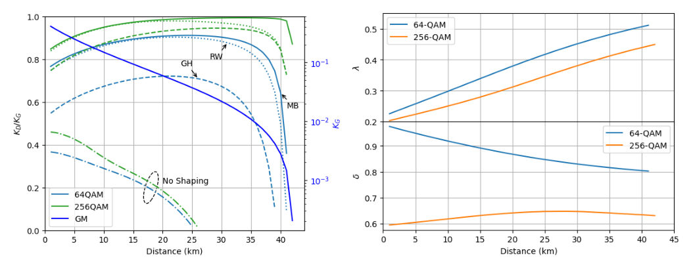
<figcaption class="paper-figure-caption"><b>Fig 1.</b> Fig. 1: (a) SKR for discrete modulation formats normalized to the Gaussian modulated protocol with optimized modulation variance at each distance point. The solid blue line corresponds to the absolute SKR value for continuous Gaussian modulation (right vertical axis). Normalized SKRs for QAM constellations of sizes 64 and 256 are represented by light blue, red and green lines. The probabilistic shaping formats MB, RW and GH are represented by solid, dotted and dashed lines, respectively. Dotted-dashed lines correspond to QAM constellations with no shaping. (b) Optimized λ and δ parameters for the MB probabilistic shaping. The calculations considered β = 0.95, detection efficiency η = 0.8,...</figcaption>
</figure>
<figure class="paper-figure-card">
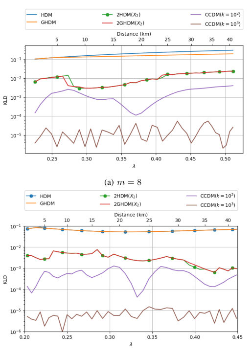
<figcaption class="paper-figure-caption"><b>Fig 2.</b> Fig. 2: Kullback–Leibler divergence between matched distri- butions and the optimized MB distribution supports of size m = {8, 16} for the Huffman matchers (symbol and pairwise) and the CCDM with different block of lengths.</figcaption>
</figure>
<figure class="paper-figure-card">
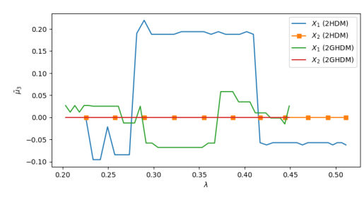
<figcaption class="paper-figure-caption"><b>Fig 3.</b> Fig. 3: Skewness of the marginal distributions obtained from pairwise Huffman and geometric Huffman matching from Fig. 2a.</figcaption>
</figure>
<figure class="paper-figure-card">
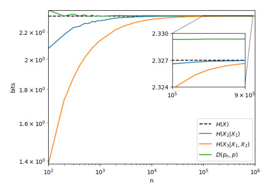
<figcaption class="paper-figure-caption"><b>Fig 4.</b> Fig. 4: Conditional entropy ˆH(Xi|Xi−1) and ˆH(Xi|Xi−1, Xi−2) for the sequences output by the CCDM with different block lengths.</figcaption>
</figure>
<figure class="paper-figure-card">
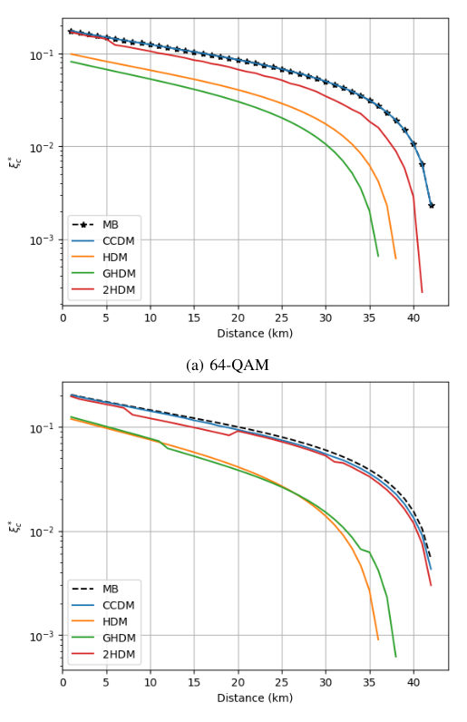
<figcaption class="paper-figure-caption"><b>Fig 5.</b> Fig. 6: Maximal Excess Noise for a SKR threshold of Kth = 10−4 of probabilistically shaped (a) 64-QAM and (b) 256- QAM constellations considering the optimal MB distributions and the matched distribution from the Huffman and CCDM approaches.</figcaption>
</figure>
</div>

<p><strong>Summary.</strong> This paper investigates the security limits of CV-QKD when using discrete modulation formats shaped probabilistically. It compares various distribution matching algorithms, finding that Constant Composition Distribution Matching (CCDM) provides the most accurate approximation to optimal distributions. This confirms that careful implementation of PCS is crucial for maximizing key rates and maintaining noise tolerance in practical quantum communication links.</p>
<p><strong>Why it may be interesting.</strong> It provides rigorous theoretical bounds on achievable secure key rates when practical digital signal processing techniques (like discrete constellation shaping via DM) are used in quantum communication systems.</p>
<details>
<summary>Detailed structure</summary>
<p><strong>Main problem.</strong> The paper analyzes how using Distribution Matching (DM) algorithms for Probabilistic Constellation Shaping (PCS) affects the Secret Key Rate (SKR) in Continuous Variable Quantum Key Distribution (CV-QKD) protocols with discrete modulation.</p>
<p><strong>Main result.</strong> Constant Composition Distribution Matching (CCDM) performs significantly better than symbol-by-symbol Huffman matching, achieving SKRs that closely match the theoretical optimum and maintaining high excess noise tolerance.</p>
<p><strong>Method.</strong> The analysis involves calculating the SKR using established CV-QKD security formulas, comparing results from different DM techniques (HDM vs. CCDM), and quantifying statistical dependence on finite block lengths.</p>
<p><strong>Model / system.</strong> The system is a CV-QKD protocol transmitting light field quadratures through a quantum channel characterized by transmittance ($    au$) and excess noise ($\xi_c$). The modulation uses discrete constellations shaped probabilistically.</p>
<p><strong>Key observables.</strong> Secret Key Rate (SKR), maximum tolerable excess noise ($\xi^*_c$), and the performance degradation relative to ideal Gaussian modulation.</p>
<p><strong>Important parameters / regimes.</strong> Constellation size (e.g., 64-QAM, 256-QAM), channel parameters ($   au$, $\xi_c$), and block lengths ($10^3$ or $10^5$ symbols).</p>
<p><strong>Assumptions / limitations.</strong> The analysis compares the performance of finite-length approximations (HDM/CCDM) against the ideal, continuous Maxwell-Boltzmann distribution.</p>
<p><strong>Figures summary.</strong> Figures compare SKR vs. distance for various shaping methods and show $\xi^*_c$ values, demonstrating CCDM's superior noise tolerance compared to other matching techniques.</p>
<p><strong>Paper structure.</strong> The paper progresses by establishing the need for PCS in CV-QKD, detailing the mathematical framework for SKR calculation, comparing multiple DM algorithms (HDM, GHDM, CCDM) against the optimal MB benchmark, and concluding with performance metrics like noise tolerance.</p>
</details>
<details>
<summary>Abstract</summary>
<p>Continuous variable quantum key distribution protocols (CV-QKD) with discrete modulation have been intensively investigated to bridge the gap between ideal Gaussian modulation and modern coherent optical communication systems. To mitigate the penalty of discrete modulation, probabilistic constellation shaping (PCS) is applied to the modulation format and is typically performed by distribution matching (DM) algorithms. In this paper, we address the application of DM algorithms to perform PCS in CV-QKD protocols. We investigate the impact of approximating optimized Maxwell-Boltzman distributions with DM algorithms based on Huffman (HDM) and constant composition (CCDM) codes on the protocol's secret key rate (SKR) and tolerance to excess noise. Our results show that specifically symbol-by-symbol HDM degrades the SKR by at least 30\%, whereas CCDM matches the optimal SKR with code length of $10^3$ or more symbols. Furthermore, we also provide a statistical analysis of symbol dependence for both approaches, showing that CCDM must operate with blocks of at least $10^5$ symbols for the correlations become negligible. Finally, we propose an algorithm to generate independent symbols following near-optimal distributions.</p>
</details>
<p><sub><a href="#top">↑ back to top</a></sub></p>
<h2 id="other-papers-5">Other papers (5)</h2>
<p><em>Papers from primary archives without highlighted authors or any topic match. Click to expand.</em></p>
<details>
<summary>Show other papers</summary>

<p><a id="paper-2607.06953"></a></p>
<h3 id="a-quantum-model-for-synchronizing-finite-state-transition-systems"><a href="http://arxiv.org/abs/2607.06953v1">A quantum model for synchronizing finite state transition systems</a></h3>
<p><strong>Authors:</strong> Martin Lukac, Khaled El-Fakih, Uraz Turker<br>
<strong>Type:</strong> theory · <strong>Category:</strong> quantum information and computing · <strong>PDF:</strong> <a href="https://arxiv.org/pdf/2607.06953v1">https://arxiv.org/pdf/2607.06953v1</a><br>
<strong>Analysis basis:</strong> full PDF text, analyzed in chunks</p>
<div class="figure-strip-hint">↔ Scroll figures horizontally</div>
<div class="paper-figures-scroll">
<figure class="paper-figure-card">
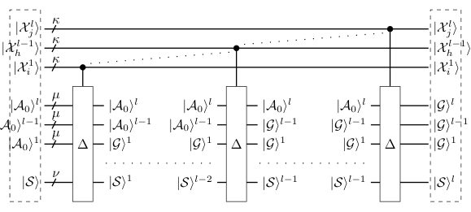
<figcaption class="paper-figure-caption"><b>Fig 1.</b> Figure 2: Circuit representing the l−times application of ∆to a sequence of l inputs encoded by |X l j⟩· · · |X 1 i ⟩ starting from an FA state encoded by S⟩. This represents the evolution, according to ∆, from QTS |Q⟩to |Q⟩l leading to the FA state encoded by S⟩l.</figcaption>
</figure>
<figure class="paper-figure-card">
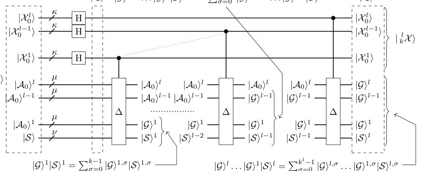
<figcaption class="paper-figure-caption"><b>Fig 2.</b> Figure 3: Circuit representing the applications of all input sequences of length l in supposition; namely, applying in order the first, second, .., l −th inputs of these sequences starting from a single FA state |S⟩ leading the to the FA states encoded by |S⟩l.</figcaption>
</figure>
<figure class="paper-figure-card">
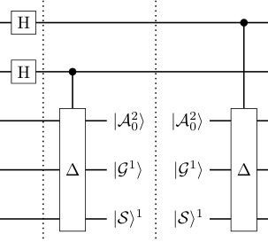
<figcaption class="paper-figure-caption"><b>Fig 3.</b> Figure 4: Circuit corresponding to the FA built from the specifications in Table 1, superposed input qubits |X 2 0 , X 1 0 ⟩, and two ancillae qubits, one for each sequential input</figcaption>
</figure>
<figure class="paper-figure-card">
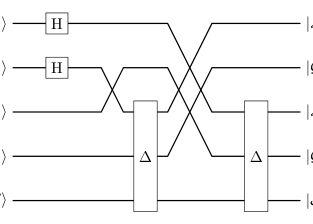
<figcaption class="paper-figure-caption"><b>Fig 4.</b> Figure 5: Circuit showing how the qubits are routed to each of the ∆operator when used as in circuit in Figure 4</figcaption>
</figure>
<figure class="paper-figure-card">
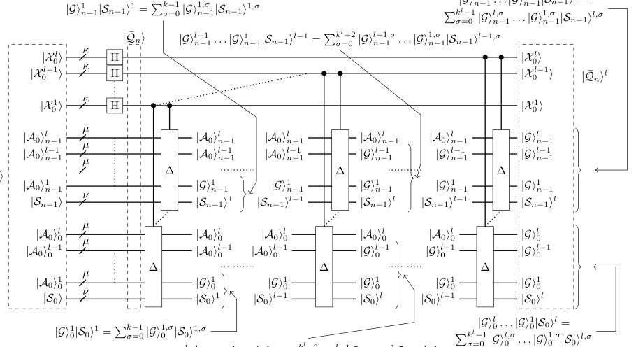
<figcaption class="paper-figure-caption"><b>Fig 5.</b> Figure 6: A circuit representing the applications of all input sequences of length l in supposition; namely, applying in order the first, second, .., l −th inputs of these sequences to all state of the FA encoded in quantum states |S0⟩,..., |Sn−1⟩.</figcaption>
</figure>
</div>
<p><strong>Summary.</strong> This paper develops a quantum model to solve the synchronization problem for Finite State Transition Systems. By encoding the system dynamics into unitary operators and employing Grover search on superpositions of input sequences, it finds a Resetting Input Sequence (RS). The approach offers a significant quadratic speedup over known classical brute-force methods.</p>
<p><strong>Why it may be interesting.</strong> This work demonstrates applying advanced quantum search techniques (Grover's algorithm) to solve a classically hard problem in automata theory, providing a clear computational complexity advantage relevant to quantum computation theory.</p>
<details>
<summary>Detailed structure</summary>
<p><strong>Main problem.</strong> The core problem is finding a Resetting Input Sequence (RS) for a Finite State Transition System (FA) that forces the system into a specific state regardless of its initial condition.</p>
<p><strong>Main result.</strong> The authors propose a quantum algorithm achieving a quadratic speedup over classical brute-force methods for solving this computationally hard synchronization problem.</p>
<p><strong>Method.</strong> They encode the FA dynamics into unitary operators and utilize superposition, followed by Amplitude Amplification and Grover search to efficiently locate the required synchronizing sequence.</p>
<p><strong>Model / system.</strong> The system models an FA using quantum registers for states ($|S
angle$) and inputs ($|X
angle$), embedding the transition function into global unitary matrices ($\Delta$).</p>
<p><strong>Key observables.</strong> The primary observable is finding a collection of reached states that are all identical, corresponding to the target synchronizing state.</p>
<p><strong>Important parameters / regimes.</strong> Complexity scales are compared: classical brute-force complexity vs. quantum search complexity (e.g., $\sqrt{M}$ steps).</p>
<p><strong>Assumptions / limitations.</strong> The method assumes the ability to embed non-permutative transition matrices into unitary permutative matrices using ancilla qubits.</p>
<p><strong>Figures summary.</strong> Figures illustrate circuits for applying single inputs, sequences of length $l$, and the overall evolution on a Quantum Total State (QTS).</p>
<p><strong>Paper structure.</strong> The paper first defines the NP-Hard/PSPACE-Complete problem, then constructs the quantum model by encoding transitions into unitaries ($\Delta$), simulates state evolution via superposition, and finally applies Grover search to find the RS.</p>
</details>
<details>
<summary>Abstract</summary>
<p>We propose a quantum model for finding a resetting input sequence (RS) which can take a finite state transition system (FA), to particular state independent of its current state. The complexity of finding such sequences for various types of FA can be NP-Hard or even PSPACE-Complete. To this end, we represent the FA states, inputs, and transition function in quantum space. Accordingly, we propose a model to represent the execution of an input sequence of a particular length $l$ starting form an initial FA state. The model is extended considering the application in superposition of all input sequences of length $l$ to an initial state of the FA. The model is further extended considering the application of all input sequences to all initial states of the FA capturing for every input sequence the collection (ordered list) of states reached by applying the sequence to all states of the FA. The amplitude amplification algorithm is then used as it combines similar collections of reached states while preserving all input sequences that reach these collections. A Grover search for a reached collection where its elements correspond to the same FA state provides a RS for the FA. Our approach offers a quadratic gain over the exponential complexity of traditional brute-force method, which is the only method that can be applied to a general FA class. As a proof of concept we provide results of several simulated FAs on a quantum simulator.</p>
</details>
<p><sub><a href="#top">↑ back to top</a></sub></p>

<p><a id="paper-2607.07692"></a></p>
<h3 id="error-bounds-for-the-truncated-baker-campbell-hausdorff-and-zassenhaus-formulas-in-unitary-problems"><a href="http://arxiv.org/abs/2607.07692v1">Error bounds for the truncated Baker--Campbell--Hausdorff and Zassenhaus formulas in unitary problems</a></h3>
<p><strong>Authors:</strong> A. Arnal, F. Casas, J. L. Ruiz-Benito<br>
<strong>Type:</strong> theory · <strong>Category:</strong> other · <strong>PDF:</strong> <a href="https://arxiv.org/pdf/2607.07692v1">https://arxiv.org/pdf/2607.07692v1</a><br>
<strong>Analysis basis:</strong> full PDF text, analyzed in chunks</p>
<div class="figure-strip-hint">↔ Scroll figures horizontally</div>
<div class="paper-figures-scroll">
<figure class="paper-figure-card">

<figcaption class="paper-figure-caption"><b>Fig 1.</b> Figure 1: Actual error (32) committed by the truncated second-order BCH formula, together with the bounds (33) for two skew-adjoint 20 × 20 matrices 𝐴and 𝐵. The difference between 𝐵[2] 1 and 𝐵[2] 2 is almost negligible in this case, and they overestimate the actual error by less than a factor 3.</figcaption>
</figure>
<figure class="paper-figure-card">
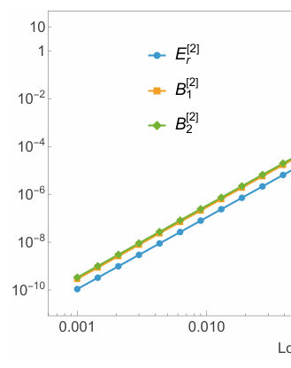
<figcaption class="paper-figure-caption"><b>Fig 2.</b> Figure 2 corresponds to the truncated BCH formula after 𝑚= 3 terms. Specifically, we represent the actual error 𝐸[3] 𝑟 ≡‖e𝑡𝐴e𝑡𝐵−e𝑍[3]‖ as a function of 𝑡, together with the bound 𝐵[3] 1 collected in the Appendix, eq. (48), and the corresponding expression 𝐵[3] 2 obtained from 𝐵[3] 1 by applying the triangle inequality to each term 𝐶[3] 𝑗. Again,</figcaption>
</figure>
<figure class="paper-figure-card">
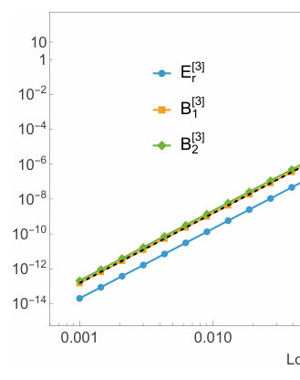
<figcaption class="paper-figure-caption"><b>Fig 3.</b> Figure 2: Actual error 𝐸[3] 𝑟 committed by the truncated second-order BCH formula, together with the theoretical bounds obtained in this work for two skew-adjoint 20 × 20 matrices 𝐴and 𝐵. The dashed line corresponds to the leading term in the theoretical bound (26).</figcaption>
</figure>
</div>
<p><strong>Summary.</strong> This paper develops a rigorous mathematical framework to calculate precise error bounds when approximating complex unitary time evolution operators using truncated versions of the Baker-Campbell-Hausdorff and Zassenhaus formulas. By bounding the error in terms of nested commutators, it provides crucial theoretical guarantees for numerical quantum simulation techniques.</p>
<p><strong>Why it may be interesting.</strong> This work provides essential mathematical tools for quantum simulation algorithms (like Trotterization or product formulas) by quantifying exactly how much error is introduced when truncating the necessary exponential series expansions.</p>
<details>
<summary>Detailed structure</summary>
<p><strong>Main problem.</strong> The core problem is deriving rigorous, general error bounds for approximating the logarithm of operator products (BCH) or the exponential of sums (Zassenhaus) when these infinite series must be truncated for practical computation.</p>
<p><strong>Main result.</strong> The authors provide a general strategy and explicit formulas showing that the truncation error can be bounded by linear combinations of nested commutators, which exhibit a predictable scaling property.</p>
<p><strong>Method.</strong> The analysis relies on comparing two representations of the evolution operator (e.g., $e^A e^B$ vs. $e^{\Phi(A, B)}$) and using differential equations satisfied by time-dependent unitary operators to bound the difference.</p>
<p><strong>Model / system.</strong> The context is general unitary problems in quantum physics where the evolution operator is expressed as a product or sum of exponentials of non-commuting, skew-adjoint operators (e.g., $e^{tA}e^{tB}$).</p>
<p><strong>Key observables.</strong> The error norm, $\| 	ext{Exact Evolution} - 	ext{Truncated Approximation} \|$, which is shown to be related to the $(m+1)$-th order term in the expansion.</p>
<p><strong>Important parameters / regimes.</strong> The truncation order ($m$ or $q$) and the norms of the involved operators ($\|A\|, \|B\|$).</p>
<p><strong>Assumptions / limitations.</strong> The operators $A$ and $B$ are assumed to be skew-adjoint, which is typical for quantum evolution problems.</p>
<p><strong>Figures summary.</strong> Figures illustrate that the theoretically derived error bounds closely match the actual computed errors for small truncation orders ($m=2, 3$), confirming the accuracy of the established bounds.</p>
<p><strong>Paper structure.</strong> The paper systematically develops the general theory by first establishing the framework using differential equations, then deriving specific, increasingly complex error bounds for both the BCH and Zassenhaus formulas in terms of nested commutators.</p>
</details>
<details>
<summary>Abstract</summary>
<p>The Baker--Campbell--Hausdorff (BCH) formula plays a critical role in many branches of mathematics and physics. It expresses the logarithm of the product of exponentials of non-commuting operators as an infinite series of nested commutators of the operators involved. The Zassenhaus formula is the dual of the BCH formula: the exponential of a sum of operators is written as an infinite product of exponentials involving the operators and their commutators. In practical computations, however, one typically has to truncate the expansions, and so understanding the error committed by the resulting approximations and eventually providing suitable bounds for this error is of paramount interest. In this work we present a general strategy to derive rigorous error bounds and explicit error constants for the BCH and Zassenhaus formulas when the operators involved are skew-adjoint, as is the case for quantum evolution problems.</p>
</details>
<p><sub><a href="#top">↑ back to top</a></sub></p>

<p><a id="paper-2607.07336"></a></p>
<h3 id="resource-efficient-hybrid-quantum-neighborhood-selection-for-large-scale-molecular-diversity-optimization"><a href="http://arxiv.org/abs/2607.07336v1">Resource-Efficient Hybrid Quantum Neighborhood Selection for Large-Scale Molecular Diversity Optimization</a></h3>
<p><strong>Authors:</strong> Nicolas Mendes de Araujo, Lester de Abreu Faria<br>
<strong>Type:</strong> theory · <strong>Category:</strong> quantum information and computing · <strong>PDF:</strong> <a href="https://arxiv.org/pdf/2607.07336v1">https://arxiv.org/pdf/2607.07336v1</a><br>
<strong>Analysis basis:</strong> full PDF text, analyzed in chunks</p>
<div class="figure-strip-hint">↔ Scroll figures horizontally</div>
<div class="paper-figures-scroll">
<figure class="paper-figure-card">
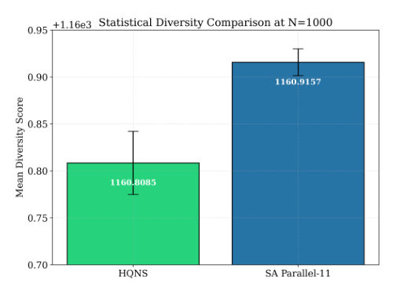
<figcaption class="paper-figure-caption"><b>Fig 1.</b> FIGURE 1. Statistical diversity comparison at N = 1000 over ten independent runs. Error bars indicate one standard deviation. SA Parallel-11 achieves the higher mean diversity score, while HQNS preserves 99.9908% of the SA mean diversity.</figcaption>
</figure>
<figure class="paper-figure-card">
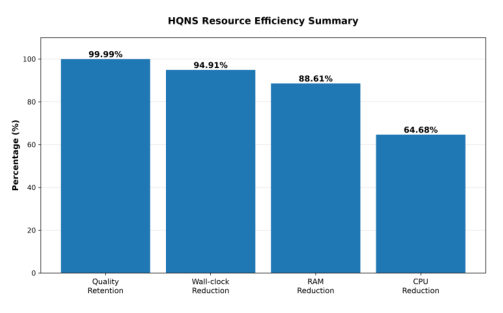
<figcaption class="paper-figure-caption"><b>Fig 2.</b> FIGURE 2. Quality-retention and resource-efficiency summary at N = 1000. HQNS preserves 99.9908% of the SA Parallel-11 mean diversity score while reducing wall-clock time, peak CPU utilization, and peak memory usage.</figcaption>
</figure>
<figure class="paper-figure-card">
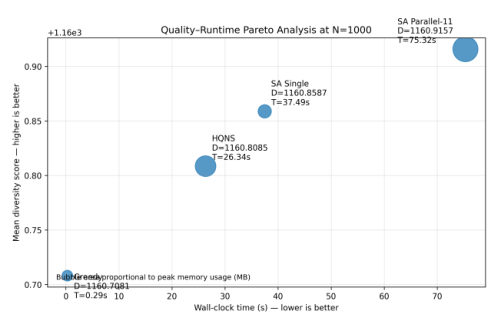
<figcaption class="paper-figure-caption"><b>Fig 3.</b> FIGURE 4. Pareto Analysis of Solution Quality versus Computational Cost at N = 1000. The horizontal axis reports wall-clock execution time, while the vertical axis reports mean diversity score over ten independent runs. Bubble area is proportional to peak memory usage. HQNS occupies an intermediate operational region: it is substantially faster than SA Single and SA Parallel-11, while preserving near-baseline diversity relative to the strongest parallel classical baseline.</figcaption>
</figure>
<figure class="paper-figure-card">
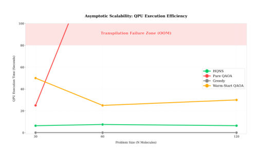
<figcaption class="paper-figure-caption"><b>Fig 4.</b> FIGURE 3. QPU execution-time stability across problem scales. HQNS maintains a bounded QPU execution envelope because each quantum stage operates on a compact active frontier rather than the full N-variable QUBO.</figcaption>
</figure>
</div>
<p><strong>Summary.</strong> This paper introduces Hybrid Quantum Neighborhood Selection (HQNS) to tackle large combinatorial optimization problems formulated as dense QUBOs. By decomposing the problem into small, manageable quantum subproblems via frontier selection, HQNS significantly reduces computational resource demands compared to classical methods. This demonstrates a practical, resource-aware pathway for utilizing near-term quantum hardware in complex scientific simulations.</p>
<p><strong>Why it may be interesting.</strong> It provides a concrete, resource-efficient architectural blueprint for integrating quantum processors into complex optimization pipelines, which is highly relevant for developing algorithms applicable to molecular simulation or material design using near-term hardware.</p>
<details>
<summary>Detailed structure</summary>
<p><strong>Main problem.</strong> Solving large-scale combinatorial optimization problems, specifically those formulated as dense QUBO instances like Maximum Diversity Subset Selection.</p>
<p><strong>Main result.</strong> The proposed HQNS framework achieves near-baseline solution quality while drastically reducing computational resource consumption (time, CPU, memory) compared to strong classical baselines on large problem sizes ($N=1000$).</p>
<p><strong>Method.</strong> HQNS decomposes the large QUBO instance into smaller, bounded-width quantum subproblems by selecting a stochastic 'frontier' of active variables for local optimization on the QPU.</p>
<p><strong>Model / system.</strong> The problem is modeled using QUBO formulations derived from pairwise similarity matrices. The context is Near-Term Intermediate-Scale Quantum (NISQ) processors, which struggle with monolithic encoding of large interactions.</p>
<p><strong>Key observables.</strong> Diversity score retention (99.9908% vs baseline), wall-clock time reduction (94.91%), peak CPU utilization reduction (64.68%), and QPU execution time stability ($\sim 6-7$ seconds).</p>
<p><strong>Important parameters / regimes.</strong> Problem size $N$ up to 1000; Frontier size $F \ll N$; QUBO formulation complexity.</p>
<p><strong>Assumptions / limitations.</strong> The quantum component's workload is bounded by the fixed frontier size ($F$), decoupling it from the global dimension ($N$) for practical NISQ deployment.</p>
<p><strong>Paper structure.</strong> The paper establishes the computational bottleneck of large QUBO problems, introduces HQNS as a resource-aware hybrid solution, evaluates its performance against state-of-the-art classical solvers (SA), and concludes by demonstrating its practical utility for NISQ hardware.</p>
</details>
<details>
<summary>Abstract</summary>
<p>Large-scale combinatorial optimization remains demanding for classical heuristics, particularly when dense Quadratic Unconstrained Binary Optimization (QUBO) formulations induce large memory footprints, high CPU utilization, and long execution times. While near-term quantum processors cannot yet deliver unconditional quantum advantage, hybrid architectures can provide practical value by reducing the resource burden. This paper presents a resource-efficiency study of Hybrid Quantum Neighborhood Selection (HQNS), a framework that decomposes large dense QUBO instances into bounded-width quantum subproblems via stochastic frontier selection. We evaluate HQNS on the Maximum Diversity Subset Selection Problem (MDSSP), focusing on the trade-off between solution quality retention and resource consumption. Benchmarks up to N=1000 candidates show that HQNS preserves 99.9908% of the mean diversity score of an 11-restart parallel Simulated Annealing baseline, while reducing wall-clock time by 94.91%, peak CPU utilization by 64.68%, and peak memory usage by 88.61%. The QPU execution time remains bounded within a 6-7 second envelope across scales, indicating that the quantum component is decoupled from the global QUBO dimension when the frontier size is fixed. These results suggest that HQNS provides a resource-aware pathway for deploying hybrid quantum optimization in practical large-scale settings, serving as an efficient architecture for incorporating near-term quantum processors into classical optimization pipelines.</p>
</details>
<p><sub><a href="#top">↑ back to top</a></sub></p>

<p><a id="paper-2607.06675"></a></p>
<h3 id="spectral-born-machines-classically-trainable-quantum-generative-models-for-discrete-data"><a href="http://arxiv.org/abs/2607.06675v1">Spectral Born machines: classically trainable quantum generative models for discrete data</a></h3>
<p><strong>Authors:</strong> Austin Huang, William Maxwell, Vasilis Belis, Evan Peters, Jason Pye, Soran Jahangiri, Joseph Bowles<br>
<strong>Type:</strong> theory · <strong>Category:</strong> quantum information and computing · <strong>PDF:</strong> <a href="https://arxiv.org/pdf/2607.06675v1">https://arxiv.org/pdf/2607.06675v1</a><br>
<strong>Analysis basis:</strong> full PDF text, analyzed in chunks</p>
<div class="figure-strip-hint">↔ Scroll figures horizontally</div>
<div class="paper-figures-scroll">
<figure class="paper-figure-card">
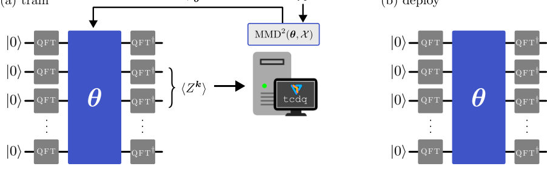
<figcaption class="paper-figure-caption"><b>Fig 1.</b> FIG. 1. (a) A spectral Born machine consists of a diagonal parameterized unitary sandwiched between two layers of quantum Fourier transforms acting on qudits. For these circuits, expectation values of Heisenberg-Weyl observables can be classically estimated in order to train the maximum mean discrepancy loss function between the output distribution of the circuit and the empirical data distribution, which we make available via the PennyLane module tcdq. (b) Once training is complete, the trained circuit can be deployed on quantum hardware and used to sample new data, where genuine computational advantages may be present.</figcaption>
</figure>
<figure class="paper-figure-card">
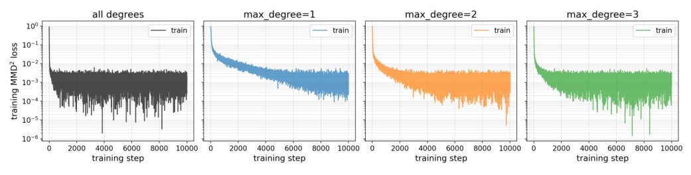
<figcaption class="paper-figure-caption"><b>Fig 2.</b> FIG. 2. The four spectral Born machines (with varying parameter counts) used for Potts model experiments achieve similar training loss, suggesting that the models converge towards similar test performance regardless of model complexity.</figcaption>
</figure>
<figure class="paper-figure-card">
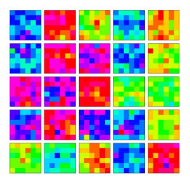
<figcaption class="paper-figure-caption"><b>Fig 3.</b> FIG. 3. Example configurations from the Potts model on a 6 × 6 lattice. Colours represent each of the 16 possible values the variables can take.</figcaption>
</figure>
<figure class="paper-figure-card">
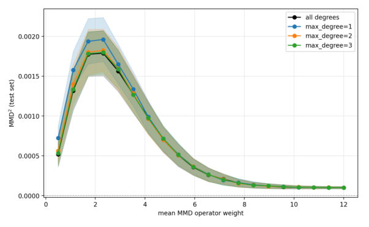
<figcaption class="paper-figure-caption"><b>Fig 4.</b> FIG. 4. The inductive bias of the spectral Born machine allows small models to achieve comparable performance compared to significantly larger models. Curves show test loss values for the four models used in the Potts experiment as a function of the mean operator weight of the complete graph MMD loss (shaded areas denote 1 standard deviation of the estimated MMD2).</figcaption>
</figure>
<figure class="paper-figure-card">
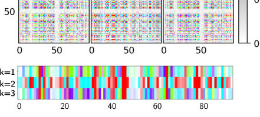
<figcaption class="paper-figure-caption"><b>Fig 5.</b> FIG. 5. Comparing visualizations of the Fourier coefficients of the complete dataset (left) versus trained spectral Born machine (right) suggests that the models learn broadly similar features to the data. The panels below show the values of the Fourier coefficients with vectors k of weight 2, where the (i, j)th elements of k take one of the nine possible values (ki, kj). For instance, the first row of the panel below shows the first order Fourier coefficients (diagonal elements) of the k1 = k2 = 1 subplot of the figure above. Since coefficients are complex, the hue shows the magnitude (with scale given to the right of the plots) and the colour shows the phase.</figcaption>
</figure>
</div>
<p><strong>Summary.</strong> This paper introduces spectral Born machines, a class of quantum generative models designed specifically for learning discrete, integer-structured data. By leveraging the Quantum Fourier Transform over $\mathbb{Z}_n^d$, these models gain an inductive bias that is both powerful and classically trainable via MMD loss minimization. The work demonstrates scalability by successfully training large models on complex biological sequences like rRNA.</p>
<p><strong>Why it may be interesting.</strong> The focus on using group theory (Fourier analysis) to impose structure on quantum models is highly relevant for building physically motivated and efficiently trainable quantum circuits beyond simple binary encoding schemes.</p>
<details>
<summary>Detailed structure</summary>
<p><strong>Main problem.</strong> Developing quantum generative models capable of learning complex, discrete data structures (like integers) while remaining classically trainable for practical implementation.</p>
<p><strong>Main result.</strong> The spectral Born machine provides a general framework that uses group Fourier analysis to create an inductive bias suitable for integer-structured data, enabling scalable training on classical hardware.</p>
<p><strong>Method.</strong> Training is achieved using the Maximum Mean Discrepancy (MMD) loss derived from graph spectral analysis, which allows efficient estimation of quantum expectation values via classical sampling techniques.</p>
<p><strong>Model / system.</strong> The model generalizes IQP Born machines by employing the Quantum Fourier Transform over $\mathbb{Z}_n^d$. It utilizes parameterized unitary gates constructed from generalized Pauli/Heisenberg-Weyl observables acting on qudits.</p>
<p><strong>Key observables.</strong> Expectation values of Heisenberg-Weyl observables, $\langle D(k, m) \rangle_{\theta}$, and the Mean Maximum Discrepancy (MMD) loss function used for training.</p>
<p><strong>Important parameters / regimes.</strong> The dimension $d$ and length $n$ of the discrete group $\mathbb{Z}_d^n$; model size up to 190 qubits with over 1 million parameters.</p>
<p><strong>Assumptions / limitations.</strong> Classical trainability relies on the expectation values of specific observables being estimable via classical algorithms, and efficient computation of the phase function $\Phi_{\theta}(z)$ is assumed.</p>
<p><strong>Figures summary.</strong> Figure 1 illustrates the structure of a spectral Born machine, showing its construction using diagonal parameterized unitaries sandwiched between QFT layers for both classical training visualization and quantum deployment.</p>
<p><strong>Paper structure.</strong> The paper first introduces the model by generalizing IQP Born machines via group Fourier analysis. It then details the mathematical framework, including generalized observables (HW) and the explicit formulas for calculating expectation values classically. Finally, it focuses on developing efficient, batched estimators for these expectations and the MMD loss.</p>
</details>
<details>
<summary>Abstract</summary>
<p>We present \emph{spectral Born machines}, a class of quantum generative models that results from viewing and generalizing the class of IQP Born machines through the lens of group Fourier analysis. These quantum models exploit the quantum Fourier transform to create an inductive bias that make them naturally suited to learning integer-structured data, while remaining classically hard to sample from in general. Similar to IQP Born machines, spectral Born machines can be trained efficiently at scale on classical hardware via a maximum mean discrepancy loss based on graph spectral analysis, which we make available in a new \emph{tcdq} module of the PennyLane software platform. In numerical experiments, we show how the spectral bias of the model leads to significantly reduced parameter counts compared to unstructured approaches, and demonstrate the scalability of the software by training a 190-qubit model with over 1 million parameters to successfully learn a distribution of 93 nucleotide-long ribosomal RNA. Our results suggest that highly over-parameterized spectral Born machines may be immune to overfitting, even in strongly data-scarce regimes.</p>
</details>
<p><sub><a href="#top">↑ back to top</a></sub></p>

<p><a id="paper-2607.06876"></a></p>
<h3 id="xor-games-at-full-tilt-the-hardness-of-binary-nonlocal-games"><a href="http://arxiv.org/abs/2607.06876v1">XOR Games at Full Tilt: The Hardness of Binary Nonlocal Games</a></h3>
<p><strong>Authors:</strong> Richard Cleve, Eric Culf, Aviv Taller<br>
<strong>Type:</strong> theory · <strong>Category:</strong> quantum information and computing · <strong>PDF:</strong> <a href="https://arxiv.org/pdf/2607.06876v1">https://arxiv.org/pdf/2607.06876v1</a><br>
<strong>Analysis basis:</strong> full PDF text, analyzed in chunks</p>
<div class="figure-strip-hint">↔ Scroll figures horizontally</div>
<div class="paper-figures-scroll">
<figure class="paper-figure-card">
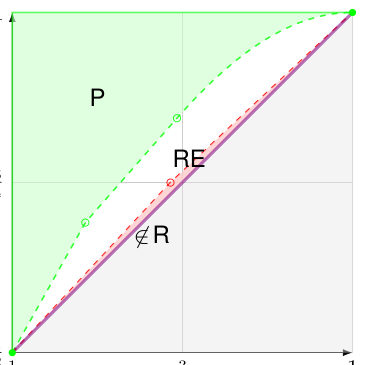
<figcaption class="paper-figure-caption"><b>Fig 1.</b> Figure 1: Hardness of tilted XOR games. The P regions (green) are problems solvable in polynomial time, the triangular regions (red) are hard instances, and the white regions are where the complexity is unknown. The problem is undefined below the diagonal (gray). The RE-complete region is not to scale (though it is the interior of a triangle with positive area). The diagonal line labelled ̸∈R (purple) is a region where the problem is not decidable (but not known to be RE-hard).</figcaption>
</figure>
<figure class="paper-figure-card">
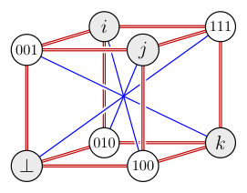
<figcaption class="paper-figure-caption"><b>Fig 2.</b> Figure 3: Gadgets for E3-LIN equations of the form vi ⊕vj ⊕vk = b.</figcaption>
</figure>
</div>
<p><strong>Summary.</strong> This paper analyzes the difficulty of approximating the quantum value for a specific class of nonlocal games called tilted XOR games. By reducing known hard computational problems like E3-LIN and the halting problem to these games, the authors prove that approximation is RE-complete. This result establishes a deep link between quantum information theory and high levels of computational complexity.</p>
<p><strong>Why it may be interesting.</strong> This work connects fundamental concepts in computational complexity theory (RE-completeness) directly to the physical limitations of quantum correlations, providing theoretical boundaries on what can be efficiently verified or simulated using quantum resources.</p>
<details>
<summary>Detailed structure</summary>
<p><strong>Main problem.</strong> The core problem is determining the computational complexity of approximating the quantum value for a generalized class of nonlocal games called 'tilted XOR games.'</p>
<p><strong>Main result.</strong> The authors prove that approximating the quantum value of tilted XOR games to constant precision is RE-complete, implying that general binary nonlocal games are hard to approximate.</p>
<p><strong>Method.</strong> The hardness result is established via a polynomial-time reduction from E3-LIN games (linear constraint systems) and later extended using reductions involving the halting problem for tracial strategies.</p>
<p><strong>Model / system.</strong> The study focuses on quantum nonlocal games, specifically 'tilted XOR games,' which are binary games whose winning condition is a slight variation of simple XOR constraints. The analysis extends to quantum tracial strategies ($\omega^*_{tr}(G)$).</p>
<p><strong>Key observables.</strong> The primary observable is the quantum value (or approximation thereof) of the game, $\omega^*(G)$ or $\omega^*_{tr}(G)$.</p>
<p><strong>Important parameters / regimes.</strong> The complexity depends on parameters like completeness probability ($c$) and soundness probability ($s$), which define the decision problem thresholds.</p>
<p><strong>Assumptions / limitations.</strong> The analysis relies on reductions from known hard problems (E3-LIN, halting problem) and utilizes characterizations of optimal strategies for XOR games.</p>
<p><strong>Figures summary.</strong> Figure 1 summarizes complexity regions for classical and quantum values ($ ext{TXOR}<em c_s="c,s">{c,s}$ vs $   ext{TXOR}^*</em>$), highlighting a red triangular region labeled RE indicating the hardness boundary.</p>
<p><strong>Paper structure.</strong> The paper progresses by first establishing the general RE-completeness result for tilted XOR games. It then refines this analysis using specific parameters ($c, s$) and extends the hardness proof to quantum tracial strategies ($\omega^*_{tr}(G)$) via a reduction from the halting problem.</p>
</details>
<details>
<summary>Abstract</summary>
<p>It is well known that the quantum value of an XOR nonlocal game, where the winning condition depends only on the XOR of the two players' output bits, may be approximated in polynomial time. We study a variant of the XOR game model, which we call tilted XOR games, where the winning condition can additionally depend on only one of the output bits. We show that this dramatically increases the expressive power: the computational complexity of the problem of approximating the quantum value of tilted XOR games to constant precision is RE-complete. Also, our result extends to succinct versions of tilted XOR games, where the questions can be polynomial-length binary strings, generated by a polynomial-time verifier.   For classical strategies, the distinction between XOR games and tilted XOR games is inconsequential. Håstad (J. ACM, 2001) shows that they are both NP-complete to approximate, by using a reduction from linear systems to XOR games. Our approach is to show that this is also quantum-sound, but as a reduction from linear system games to tilted XOR games.   Since titled XOR games are a special case of binary games (where each party outputs a single bit), our result implies that binary games are RE-hard to approximate.</p>
</details>
<p><sub><a href="#top">↑ back to top</a></sub></p>
</details>
<h2 id="secondary-cond-mat-archives">Secondary cond-mat archives</h2>
<p><em>Papers from cond-mat.mtrl-sci, mes-hall, other, soft, supr-con. These archives are de-prioritized — they appear at the end regardless of relevance score.</em></p>
<h3 id="relevant-in-secondary-archives-24">Relevant in secondary archives (24)</h3>

<p><a id="paper-2607.06812"></a></p>
<h3 id="driven-square-lattice-of-quantum-dots-in-a-magnetic-field-coupled-to-a-cylindrical-fir-photon-cavity"><a href="http://arxiv.org/abs/2607.06812v1">Driven square lattice of quantum dots in a magnetic field coupled to a cylindrical FIR-photon cavity</a></h3>
<p><strong>Authors:</strong> Vidar Gudmundsson, Vram Mughnetsyan, Hsi-Sheng Goan, Jeng-Da Chai, Nzar Rauf Abdullah, Chi-Shung Tang, Wen-Hsuan Kuan, Valeriu Moldoveanu, Andrei Manolescu<br>
<strong>Type:</strong> theory · <strong>Category:</strong> other · <strong>PDF:</strong> <a href="https://arxiv.org/pdf/2607.06812v1">https://arxiv.org/pdf/2607.06812v1</a><br>
<strong>Analysis basis:</strong> full PDF text, analyzed in chunks
<strong>Topic relevance:</strong> 🔥 <code>analog quantum simulation</code> <strong>4/5</strong> · 🔥 <code>driven-dissipative phase transition</code> <strong>4/5</strong> · <code>Tavis-Cummings &amp; cavity-many-emitter</code> <strong>3/5</strong> · <code>correlated cavity matter</code> <strong>3/5</strong> · <code>methods for driven-dissipative</code> <strong>3/5</strong> · <code>non-equilibrium dynamics</code> <strong>3/5</strong> · <code>spintronics-quantum-optics interface</code> <strong>3/5</strong> · <code>non-equilibrium universality</code> <strong>2/5</strong> · <code>Keldysh / 2PI / non-Gaussian methods</code> <strong>1/5</strong> · <code>correlated / nonlocal dissipation</code> <strong>1/5</strong> · <code>entanglement &amp; information structure</code> <strong>1/5</strong> · <code>exotic spin models in light-matter</code> <strong>1/5</strong> · <code>interference shaping light</code> <strong>1/5</strong></p>
<div class="figure-strip-hint">↔ Scroll figures horizontally</div>
<div class="paper-figures-scroll">
<figure class="paper-figure-card">
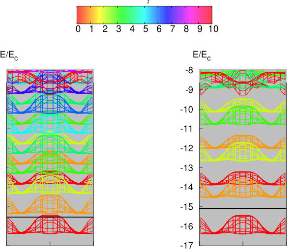
<figcaption class="paper-figure-caption"><b>Fig 1.</b> FIG. 1. Energy bandstructure projected on the θ1 axis in reciprocal space for (left) Eγ = 0.7 meV, (right) Eγ = 1.3 meV. The photon content of the energy bands is color coded according to the scale at the top. The black horizontal line indicates the chemical potential. The vertical colored lines correspond to the axis θ2 which is perpendicular to the axis θ1. Ne = 1, gγ = 0.06, pq = 1 corresponding to Ec = ℏωc = 0.7145 meV, V0 = 16.0 meV, L = 100 nm, and T = 1 K.</figcaption>
</figure>
<figure class="paper-figure-card">
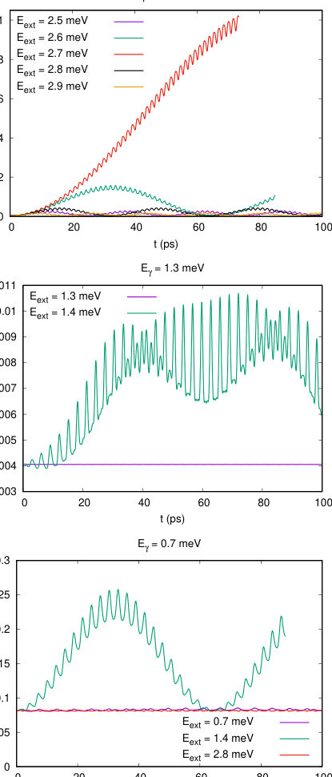
<figcaption class="paper-figure-caption"><b>Fig 2.</b> FIG. 2. The mean photon number Nγ as function of time for various values of the photon energy Eγ = ℏωγ and modulation frequency Eext = ℏωext of the electron-photon interaction. Ne = 1, gγ = 0.06, pq = 1, V0 = 16.0 meV, L = 100 nm, Vt/ℏωc = 0.5, and T = 1 K.</figcaption>
</figure>
<figure class="paper-figure-card">
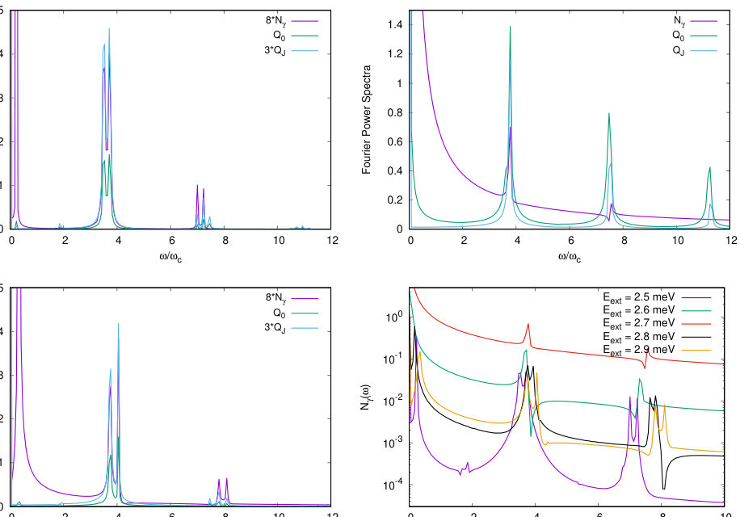
<figcaption class="paper-figure-caption"><b>Fig 3.</b> FIG. 3. The Fourier power spectra Nγ(ω), Q0(ω), and QJ(ω) for Eext = ℏωext = 2.5 meV (top left), 2.7 meV (top right), and 2.9 meV (bottom left), and Nγ(ω) compared for several values of Eext on a logarithmic scale. Ne = 1, Eγ = 1.3 meV, gγ = 0.06, pq = 1, corresponding to Ec = ℏωc = 0.7145 meV, Vt/ℏωc = 0.5, and T = 1 K.</figcaption>
</figure>
<figure class="paper-figure-card">
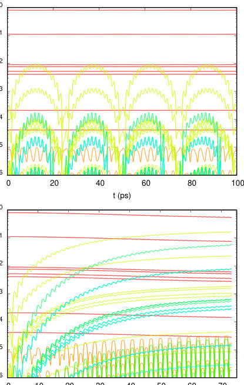
<figcaption class="paper-figure-caption"><b>Fig 4.</b> FIG. 4. The occupation of the states |αθnσ⟩versus time for (top) Eext = 2.5 meV, and (bottom) Eext = 2.7 meV. The photon content of the states is color coded according to the scale used in Fig. 1. Ne = 1, Eγ = 1.3 meV, gγ = 0.06, pq = 1, corresponding to Ec = ℏωc = 0.7145 meV, Vt/ℏωc = 0.5, and T = 1 K.</figcaption>
</figure>
<figure class="paper-figure-card">
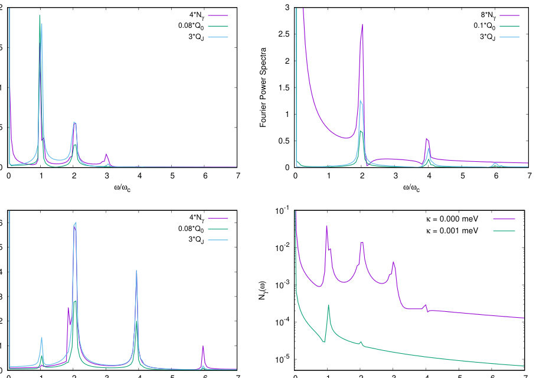
<figcaption class="paper-figure-caption"><b>Fig 5.</b> FIG. 5. The Fourier power spectra Nγ(ω), Q0(ω), and QJ(ω) for Eext = ℏωext = 0.7 meV (top left), 1.4 meV (top right), and 2.8 meV (bottom left), and Nγ(ω) compared for two values of the dissipation κ on a logarithmic scale (bottom right) for Eγ = 0.7 meV and Eext = 0.7 meV corresponding to the upper left panel. Ne = 1, Eγ = 0.7 meV, gγ = 0.06, pq = 1, corresponding to Ec = ℏωc = 0.7145 meV, Vt/ℏωc = 0.5, and T = 1 K.</figcaption>
</figure>
</div>

<p><strong>Summary.</strong> This computational study analyzes driven quantum dot arrays coupled to an FIR photon cavity under a magnetic field. By applying harmonic modulation to the electron-photon interaction, the researchers demonstrate that resonant driving conditions allow for efficient pumping of photons and the excitation of collective electronic modes. This establishes a controllable platform for manipulating photonic states in nanostructures.</p>
<p><strong>Why it may be interesting.</strong> This work is highly relevant as it combines cavity QED principles with many-body physics in low-dimensional systems, providing a controllable mechanism for manipulating photons using external driving fields—a core theme in advanced AMO research.</p>
<details>
<summary>Detailed structure</summary>
<p><strong>Main problem.</strong> The study investigates how driving a quantum dot array coupled to an FIR photon cavity can manipulate photonic states by controlling the interplay between harmonic modulation, magnetic confinement, and electron-photon interactions.</p>
<p><strong>Main result.</strong> The system exhibits resonant behavior when the driving frequency approaches twice the cavity photon frequency, enabling efficient photon pumping and activating collective radial Coulomb breathing modes.</p>
<p><strong>Method.</strong> The research employs a Quantum Electrodynamical Density Functional Theory (QED-DFT-TP) approach solved via time evolution equations in a tensor product basis.</p>
<p><strong>Model / system.</strong> The system models a 2DEG confined in a square lattice of quantum dots, subjected to an external magnetic field and coupled to a cylindrical FIR photon cavity mode. The Hamiltonian includes electron kinetic/interaction terms, the cavity photon term, and a time-dependent modulation term applied to the electron-photon coupling.</p>
<p><strong>Key observables.</strong> Mean photon number ($N_\gamma(t)$), dynamical orbital magnetization ($Q_J(t)$), collective radial Coulomb breathing modes, and energy spectrum showing 'photon replica bands'.</p>
<p><strong>Important parameters / regimes.</strong> Driving frequency ($\omega_{ext}$), cavity photon frequency ($\omega_\gamma$), electron occupation number per dot, and magnetic field strength (e.g., $B = 0.4138 	ext{ T}$).</p>
<p><strong>Assumptions / limitations.</strong> The TE$_{011}$ cavity mode is utilized; the calculation treats electron-electron interactions via DFT and models electron-photon coupling using a many-body configuration interaction approach.</p>
<p><strong>Figures summary.</strong> Figures illustrate energy bandstructures showing photon replica bands, mean photon content mapping, and time evolution plots of $N_\gamma$ and collective oscillation diagnostics ($Q_0$, $Q_J$).</p>
<p><strong>Paper structure.</strong> The paper progresses from defining the full Hamiltonian (including external modulation) to solving the dynamics using QED-DFT-TP. Key analyses focus on identifying resonant driving conditions that maximize photon pumping and observing resulting collective electronic excitations.</p>
</details>
<details>
<summary>Abstract</summary>
<p>We present a comprehensive computational study of driven quantum dot arrays in a square lattice configuration, subject to an external magnetic field and coupled to a cylindrical far-infrared photon cavity. The driving is introduced through a harmonic modulation of the full electron-photon interaction, therefore including both paramagnetic and diamagnetic contributions. The electron-electron Coulomb interactions are treated within density functional theory, while the electron-photon coupling is modeled using a many-body configuration interaction approach at each iteration of the density functional. By exploiting the unique properties of the cylindrical TE$_{011}$ cavity mode, we demonstrate selective enhancement of diamagnetic two-photon transitions. Our results reveal that the effectiveness of harmonic modulation of the electron-photon interaction is strongly dependent on both the driving frequency and the electron occupation number per dot. When the driving frequency approaches twice the cavity photon frequency, the system exhibits resonant behavior characterized by efficient photon pumping, occupation of higher-order photon replicas, and activation of collective radial Coulomb breathing modes. These findings establish a controllable mechanism for manipulating photon states in coupled quantum dot-cavity systems and provide insights into the interplay among harmonic modulation, photonic excitations, magnetic confinement, and many-body electron correlations in dimensionally reduced nanostructures.</p>
</details>
<p><sub><a href="#top">↑ back to top</a></sub></p>

<p><a id="paper-2607.07340"></a></p>
<h3 id="time-domain-stokes-mechanism-of-pair-correlated-k-gap-solitons-in-nonlinear-photonic-time-crystal-slabs"><a href="http://arxiv.org/abs/2607.07340v1">Time domain Stokes mechanism of pair correlated k gap solitons in nonlinear photonic time crystal slabs</a></h3>
<p><strong>Authors:</strong> Jiaxiang Sun, Guowei Chen, Liang Zhang, Yiming Pan<br>
<strong>Type:</strong> both · <strong>Category:</strong> other · <strong>PDF:</strong> <a href="https://arxiv.org/pdf/2607.07340v1">https://arxiv.org/pdf/2607.07340v1</a><br>
<strong>Analysis basis:</strong> full PDF text, analyzed in chunks
<strong>Topic relevance:</strong> 🔥 <code>driven-dissipative phase transition</code> <strong>4/5</strong> · <code>methods for driven-dissipative</code> <strong>3/5</strong> · <code>non-equilibrium dynamics</code> <strong>3/5</strong> · <code>quantum optics experiment</code> <strong>3/5</strong> · <code>entanglement &amp; information structure</code> <strong>2/5</strong> · <code>non-equilibrium universality</code> <strong>2/5</strong> · <code>Keldysh / 2PI / non-Gaussian methods</code> <strong>1/5</strong> · <code>analog quantum simulation</code> <strong>1/5</strong> · <code>correlated / nonlocal dissipation</code> <strong>1/5</strong> · <code>correlated cavity matter</code> <strong>1/5</strong> · <code>interference shaping light</code> <strong>1/5</strong> · <code>quantum measurements</code> <strong>1/5</strong></p>
<div class="figure-strip-hint">↔ Scroll figures horizontally</div>
<div class="paper-figures-scroll">
<figure class="paper-figure-card">
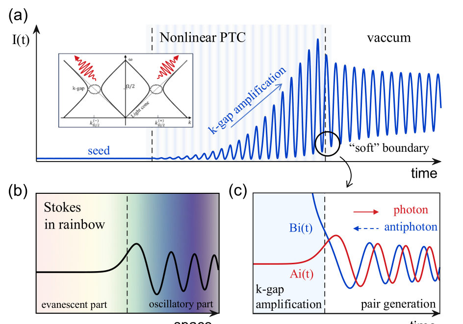
<figcaption class="paper-figure-caption"><b>Fig 1.</b> FIG. 1. The time-domain Stokes phenomenon and photon pair generation in a finite-time photonic time-crystal (PTC) slab. (a) Macroscopic temporal scattering dynamics. An incident seed pulse undergoes exponential amplification within the PTC 𝑘-gap (inset) and subsequently scatters at the exit boundary into oscillatory output modes. (b) Spatial Stokes analogy, illustrating the classical transition from an evanescent to an oscillatory regime across a turning point. (c) Microscopic Airy/Stokes mode conversion at the second temporal boundary. The localized growing branch [𝐵𝑖(𝑡)] abruptly bifurcates into two counter-propagating oscillatory states (photon and antiphoton), physically dictating the...</figcaption>
</figure>
<figure class="paper-figure-card">
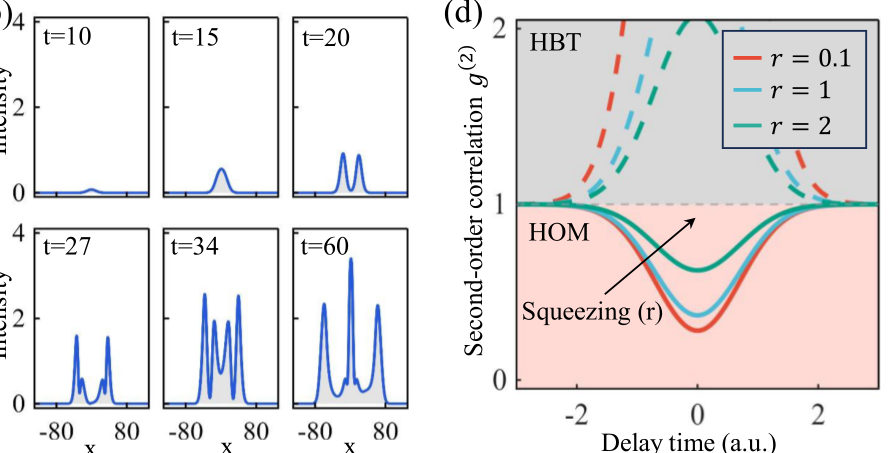
<figcaption class="paper-figure-caption"><b>Fig 2.</b> FIG. 2. Spatiotemporal dynamics and quantum statistical verification of heralded k-gap soliton pairs. (a),(b) Full-wave FDTD simulation (a) and corresponding intensity snapshots (b) of a finite-time nonlinear PTC slab acting as a superluminal pulse propagator. An incident seed undergoes localized amplification, reorganizes into a counter-propagating soliton pair, and experiences a secondary Stokes splitting at the exit boundary to emit four spatially resolvable branches. (c) Proposed four-port measurement topology. The outermost branches are designated for Hanbury Brown–Twiss (HBT) cross-correlation, while the inner branches are routed for Hong– Ou–Mandel (HOM) interferometry. The proposed...</figcaption>
</figure>
<figure class="paper-figure-card">
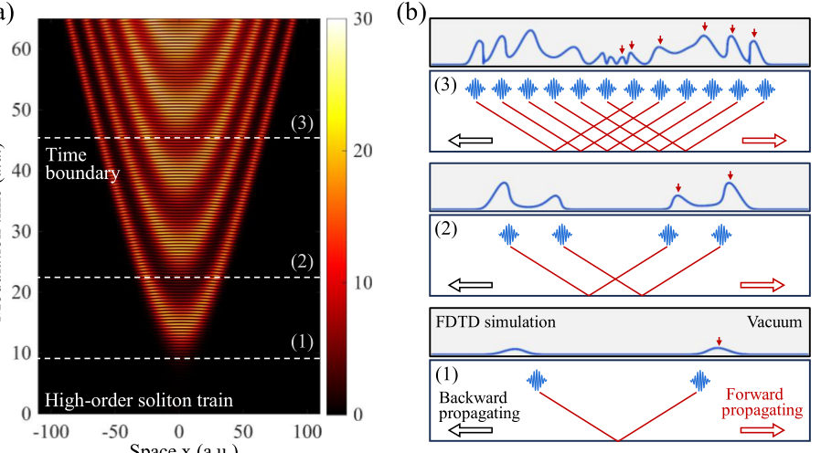
<figcaption class="paper-figure-caption"><b>Fig 3.</b> FIG. 3. Generation of entangled light pulse trains via higher-order 𝑘-gap solitons. The spatiotemporal dynamics (left) and output schematics (right) illustrate the dependence of soliton splitting on the PTC modulation depth. (1) Weak modulation limits the system to fundamental 𝑘- gap amplification, emitting a single pair of light pulses. (2) Moderate modulation excites second- order k-gap soliton dynamics, cascading the boundary scattering into two distinct pairs of pulse trains. (3) Strong modulation drives the formation of higher-order 𝑘-gap solitons, producing a dense, multiplexed cascade of entangled pulses. This amplitude-dependent scaling provides an on- demand mechanism for...</figcaption>
</figure>
</div>

<p><strong>Summary.</strong> The research shows that nonlinear photonic time crystals can generate entangled photon pairs by exploiting the time-domain Stokes phenomenon. This process involves k-gap soliton formation followed by secondary splitting at the slab's exit boundary. By measuring quantum correlations, they confirm this mechanism provides a route for ultrafast, heralded sources of nonclassical light.</p>
<p><strong>Why it may be interesting.</strong> This work is highly relevant as it bridges classical wave asymptotics (Stokes theory) with quantum light generation mechanisms (parametric amplification), offering a pathway for on-demand entangled photon sources using engineered periodic media.</p>
<details>
<summary>Detailed structure</summary>
<p><strong>Main problem.</strong> The paper aims to establish a unified connection between two mechanisms of pair generation—time reflection at temporal boundaries and parametric amplification within momentum k-gaps—using the time-domain Stokes phenomenon.</p>
<p><strong>Main result.</strong> They demonstrate that in nonlinear photonic time crystal slabs, the secondary Stokes conversion occurring at the exit boundary splits stable k-gap solitons into four spatially separated, entangled pulse branches.</p>
<p><strong>Method.</strong> The study combines theoretical analysis using Airy functions to model Stokes asymptotics with numerical simulations (FDTD) and quantum characterization via second-order correlation measurements (HBT/HOM).</p>
<p><strong>Model / system.</strong> The system is a nonlinear Photonic Time Crystal (PTC) slab governed by an electrodynamic wave equation incorporating Kerr nonlinearity. The dynamics are analyzed through the lens of the Stokes phenomenon, connecting linear Floquet theory to nonlinear soliton formation.</p>
<p><strong>Key observables.</strong> Second-order correlation functions ($g_{HBT}^{(2)}, g_{HOM}^{(2)}$), which confirm nonclassical correlations and entanglement; detection of backward-propagating pulses heralding forward partners.</p>
<p><strong>Important parameters / regimes.</strong> Kerr nonlinearity strength ($eta$), modulation depth ($   ilde{\delta}$ or $r$), and the time duration of the active PTC window.</p>
<p><strong>Assumptions / limitations.</strong> The analysis relies on mapping the system dynamics to the Airy equation near turning points, treating the process as a temporal analogue of standard Stokes scattering theory.</p>
<p><strong>Figures summary.</strong> Figures illustrate the macroscopic time-domain Stokes phenomenon leading to pair generation, showing spatiotemporal splitting into four branches, and demonstrating the dependence of entanglement on the PTC modulation depth.</p>
<p><strong>Paper structure.</strong> The paper develops from establishing the theoretical link via the Stokes phenomenon (Airy connection) to simulating nonlinear dynamics in a finite-time slab, culminating in quantum characterization using HBT/HOM measurements to confirm nonclassical pair correlations.</p>
</details>
<details>
<summary>Abstract</summary>
<p>Pair generation in time-varying media is commonly attributed to time reflection at temporal boundaries or to amplification inside momentum k gaps. Here we show that these two processes are connected by the time domain Stokes phenomenon. A finite duration photonic time crystal (PTC) slab provides the necessary Stokes connection between the incident vacuum mode, transient k gap amplification, and time boundary scattering. With Kerr nonlinearity, the otherwise unbounded amplification is arrested, spawning Kerr stabilized k gap solitons. When these solitons cross the exit boundary of the time slab, Stokes induced mode conversion produces a secondary pair generation process, yielding four spatially separated and entangled pulse branches. Detection of a backward propagating light pulse therefore heralds its forward propagating partner. We further propose combined Hanbury Brown Twiss and Hong Ou Mandel measurements to test their nonclassical correlations. These results reveal a link between asymptotic Stokes physics and quantum temporal scattering in PTCs, and suggest a route toward ultrafast heralded quantum light sources.</p>
</details>
<p><sub><a href="#top">↑ back to top</a></sub></p>

<p><a id="paper-2607.06846"></a></p>
<h3 id="high-frequency-nonlinear-conductivity-of-a-wigner-crystal"><a href="http://arxiv.org/abs/2607.06846v1">High-frequency nonlinear conductivity of a Wigner crystal</a></h3>
<p><strong>Authors:</strong> A. J. Schleusner, M. T. Elewa, N. R. Beysengulov, C. A. Mikolas, J. Pollanen<br>
<strong>Type:</strong> both · <strong>Category:</strong> other · <strong>PDF:</strong> <a href="https://arxiv.org/pdf/2607.06846v1">https://arxiv.org/pdf/2607.06846v1</a><br>
<strong>Analysis basis:</strong> full PDF text, analyzed in chunks
<strong>Topic relevance:</strong> 🔥 <code>driven-dissipative phase transition</code> <strong>4/5</strong> · <code>Frenkel-Kontorova</code> <strong>3/5</strong> · <code>methods for driven-dissipative</code> <strong>3/5</strong> · <code>non-equilibrium dynamics</code> <strong>3/5</strong> · <code>analog quantum simulation</code> <strong>2/5</strong> · <code>non-equilibrium universality</code> <strong>2/5</strong> · <code>Keldysh / 2PI / non-Gaussian methods</code> <strong>1/5</strong> · <code>correlated / nonlocal dissipation</code> <strong>1/5</strong></p>
<div class="figure-strip-hint">↔ Scroll figures horizontally</div>
<div class="paper-figures-scroll">
<figure class="paper-figure-card">
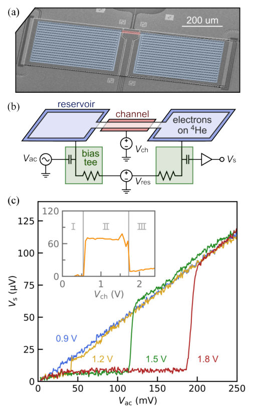
<figcaption class="paper-figure-caption"><b>Fig 1.</b> FIG. 1. (a) A false-color scanning electron microscope im- age of the device showing the central electron confining mi- crochannel (red) and electron reservoir (blue) regions. (b) Schematic of the electron system, electrodes, and voltages used to control the electron density and conduct trans- port measurements. (c) Electron transport as a func- tion of the driving field amplitude Vac at a frequency of 300 kHz for increasing central channel bias voltages (Vch = 0.9, 1.2, 1.5, 1.8 V). Inset: Transport signal as a function of Vch for Vac = 150 mV. The transport regimes correspond to an empty channel (I), a high conductivity electron state (II), and a low-conductivity Wigner crystal (III).</figcaption>
</figure>
<figure class="paper-figure-card">
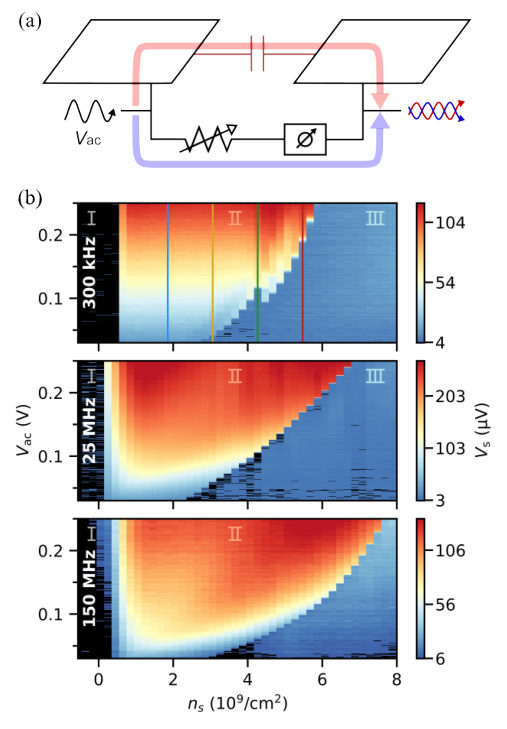
<figcaption class="paper-figure-caption"><b>Fig 2.</b> FIG. 2. (a) Schematic of the compensation line approach employed to measure the high frequency transport of the microchannel-confined electron system. A voltage tunable attenuator and phase shifter are used to interferometrically reduce the parasitic crosstalk inherent to the device geome- try. (b) The induced transport voltage Vs as a function of the central microchannel bias Vch and the ac driving voltage Vac for f = 0.3, 25, 150 MHz driving fields. The blue, gold, green, and red vertical lines in the top plot correspond to the line-cuts shown in Fig. 1c.</figcaption>
</figure>
<figure class="paper-figure-card">
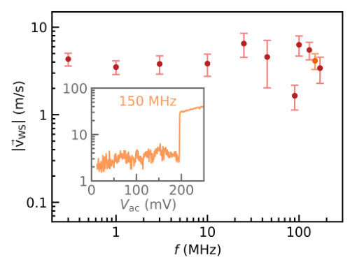
<figcaption class="paper-figure-caption"><b>Fig 3.</b> FIG. 3. Velocity of a Wigner solid moving along the cen- tral microchannel. For these data, the electron density in the channel is 7.1 × 109/cm2. Inset: Velocity of the Wigner solid as a function of the driving voltage amplitude at a frequency of 150 MHz. The data trace shows the saturated velocity re- sponse when the electrons in the microchannel are crystallized as well as a sharp transition to a non-equilibrium state of the electron system that moves at a higher velocity.</figcaption>
</figure>
<figure class="paper-figure-card">
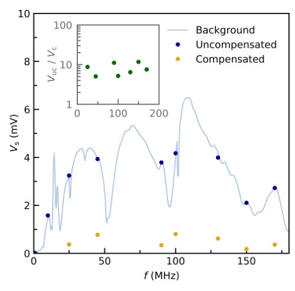
<figcaption class="paper-figure-caption"><b>Fig 4.</b> FIG. 4. The experimentally measured parasitic background for Vac = 0.2 V both with (yellow) and without (blue) com- pensation for the parasitic background signal. The dots are associated with the transport measurements described in the main text while the solid line corresponds to a characteri- zation of the entire background signal when the channel is devoid of electrons. Inset: Ratio of the uncompensated-to- compensated background signal, VUC/VC, as a function of drive frequency, showing an approximately tenfold decrease in the parasitic background.</figcaption>
</figure>
</div>

<p><strong>Summary.</strong> The research measures the electrical conductivity of a Wigner crystal on helium at very high frequencies. It finds that the electron solid exhibits nonlinear pinning due to coupling with higher-order ripplon overtones, extending beyond the standard low-frequency Cherenkov mechanism. This demonstrates how collective excitations mediate transport dynamics in strongly correlated quantum systems.</p>
<p><strong>Why it may be interesting.</strong> This work explores non-equilibrium dynamics in an interacting electron solid driven far from equilibrium, providing insights into dynamical friction and phase transitions (melting) mediated by bosonic excitations (ripplons), which is relevant to open quantum systems modeling.</p>
<details>
<summary>Detailed structure</summary>
<p><strong>Main problem.</strong> The study investigates the high-frequency nonlinear conductivity of a Wigner crystal formed by electrons on superfluid helium.</p>
<p><strong>Main result.</strong> The experiment reveals strong nonlinear transport response at frequencies much higher than conventional Bragg-Cherenkov effects, attributed to coupling with ripplon overtones via higher-order Bragg vectors.</p>
<p><strong>Method.</strong> Transport measurements are performed in a microchannel geometry using AC driving fields and phase-sensitive lock-in techniques, supplemented by an interferometric compensation line to suppress background noise.</p>
<p><strong>Model / system.</strong> The system is a low-dimensional Wigner solid (electron crystal) suspended above superfluid helium. Its dynamics are governed by the interaction between the electrons and the ripplon surface waves.</p>
<p><strong>Key observables.</strong> Transport voltage ($V_s$) as a function of driving field amplitude ($V_{ac}$) and bias voltages, showing transitions between liquid and solid states.</p>
<p><strong>Important parameters / regimes.</strong> High-frequency driving fields (up to 150 MHz), ripplon frequencies ($\omega_{G1}/2\pi \simeq 10$ MHz), and the ratio of Coulomb interaction energy to kinetic energy.</p>
<p><strong>Assumptions / limitations.</strong> The conventional Bragg-Cherenkov effect is treated in a quasi-static limit, but the high-frequency analysis extends this by considering higher-order Bragg vectors. The measurement relies on successful background signal cancellation via interference.</p>
<p><strong>Figures summary.</strong> Figures show SEM images of the device setup, schematics of electrode biasing, and $V_s$ vs. $V_{ac}$ curves demonstrating conductivity transitions at various frequencies (e.g., 0.3 MHz to 150 MHz).</p>
<p><strong>Paper structure.</strong> The paper establishes the physical system and low-frequency background theory (Bragg-Cherenkov), details the high-frequency experimental setup including noise mitigation, presents measurements across a wide frequency range, and concludes by interpreting the high-frequency response via higher-order coupling mechanisms.</p>
</details>
<details>
<summary>Abstract</summary>
<p>Electrons trapped above the surface of superfluid helium are a disorder-free platform for investigating the formation and dynamics of low-dimensional Wigner crystals. A characteristic nonlinear transport feature of this electronic solid suspended above the helium surface is the Bragg-Cherenkov effect, in which the mobility of the smoothly moving crystal is limited by the coherent emission of helium surface waves (ripplons). The effect has been understood in the conventional Cherenkov setting in which the crystal moves at a constant speed. Here we report on transport measurements of electrons on helium confined in a microchannel geometry to investigate the non-equilibrium response of the Wigner solid when it is subjected to a high-frequency driving field. Surprisingly, the experiments reveal a strongly nonlinear transport response of the confined Wigner solid at frequencies nearly an order of magnitude larger than the ripplon frequencies contributing to the conventional Bragg-Cherenkov effect. We relate this observation to the coupling of the Wigner solid to ripplons with higher-order Bragg vectors, which gives rise to a dynamical friction that provides a mechanism for the observed high-frequency pinning.</p>
</details>
<p><sub><a href="#top">↑ back to top</a></sub></p>

<p><a id="paper-2607.07590"></a></p>
<h3 id="unveiling-the-spin-valley-structure-of-dipolar-exciton-ladders-in-r-stacked-wsemath977mathwsmath978math-moire-heterobilayers"><a href="http://arxiv.org/abs/2607.07590v1">Unveiling the Spin-Valley Structure of Dipolar Exciton Ladders in R-stacked WSe$_2$/WS$_2$ Moiré Heterobilayers</a></h3>
<p><strong>Authors:</strong> Byeong Wook Cho, Tatyana V. Ivanova, Zhe Li, Takashi Taniguchi, Kenji Watanabe, Brian D. Gerardot, Mauro Brotons-Gisbert<br>
<strong>Type:</strong> experiment · <strong>Category:</strong> other · <strong>PDF:</strong> <a href="https://arxiv.org/pdf/2607.07590v1">https://arxiv.org/pdf/2607.07590v1</a><br>
<strong>Analysis basis:</strong> full PDF text, analyzed in chunks
<strong>Topic relevance:</strong> 🔥 <code>analog quantum simulation</code> <strong>4/5</strong> · 🔥 <code>spintronics-quantum-optics interface</code> <strong>4/5</strong> · <code>exotic spin models in light-matter</code> <strong>3/5</strong> · <code>quantum optics experiment</code> <strong>2/5</strong> · <code>correlated / nonlocal dissipation</code> <strong>1/5</strong> · <code>correlated cavity matter</code> <strong>1/5</strong> · <code>driven-dissipative phase transition</code> <strong>1/5</strong> · <code>entanglement &amp; information structure</code> <strong>1/5</strong> · <code>non-equilibrium dynamics</code> <strong>1/5</strong></p>
<div class="figure-strip-hint">↔ Scroll figures horizontally</div>
<div class="paper-figures-scroll">
<figure class="paper-figure-card">
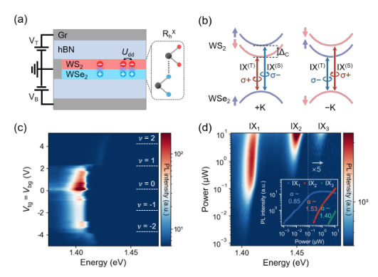
<figcaption class="paper-figure-caption"><b>Fig 1.</b> FIG. 1. (a) Schematic of the hBN-encapsulated dual-gated heterobilayer, where moir´e-confined IXs carry out-of-plane electric dipoles and interact through on-site dipolar repulsion Udd. (b) Spin–valley configurations and helicity-dependent optical selection rules for triplet IX(T) and singlet IX(S) tran- sitions, separated by the WS2 conduction-band spin splitting ∆C. (c) Filling-dependent PL spectra measured at 10 nW un- der linearly polarized 1.680 eV excitation, showing systematic modulation of the IX emission with moir´e lattice filling. (d) Excitation-power-dependent PL spectra at charge neutrality under the same excitation energy, showing the emergence of IX2 and IX3 above IX1. The...</figcaption>
</figure>
<figure class="paper-figure-card">
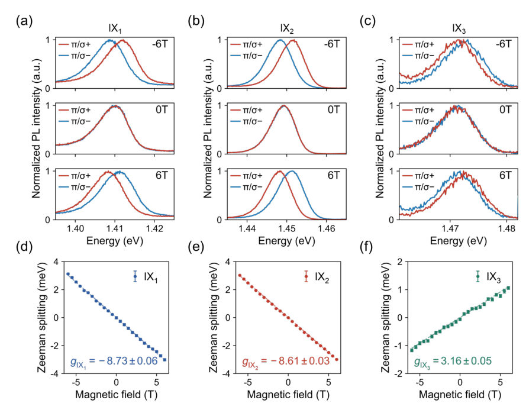
<figcaption class="paper-figure-caption"><b>Fig 2.</b> FIG. 2. (a–c) Helicity-resolved PL spectra of IX1, IX2, and IX3 at representative magnetic fields (B = −6, 0, and +6 T), under linearly polarized 1.72 eV excitation with a power of 20 µW. (d–f) Extracted Zeeman splitting, defined as ∆E = Eσ+ −Eσ−, as a function of magnetic field for IX1, IX2, and IX3. Dashed lines are linear fits using ∆E = gµBB.</figcaption>
</figure>
<figure class="paper-figure-card">
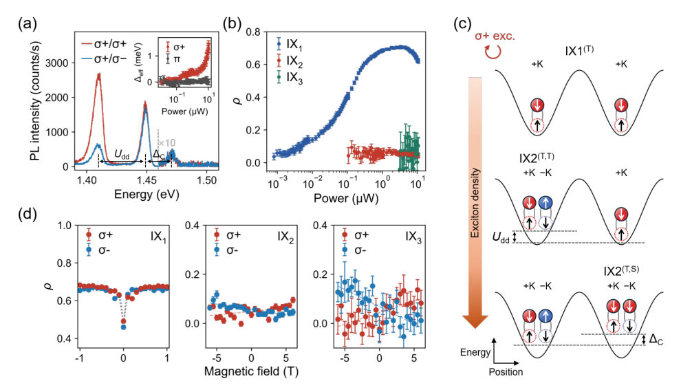
<figcaption class="paper-figure-caption"><b>Fig 3.</b> FIG. 3. (a) Helicity-resolved PL spectra measured under σ+ excitation with a power of 7 µW. The high-energy IX3 region is multiplied by a factor of 10 for clarity. The inset compares the IX1 splitting under linearly polarized and σ+ excitation, highlighting the excitation-helicity-induced energy splitting. (b) Degree of circular polarization (ρ) of IX1, IX2, and IX3 as a function of excitation power. (c) Schematic potential-energy landscape of the IX population dynamics under σ+ excitation at charge neutrality. Increasing excitation density enhances the valley imbalance of IX(T) 1 and is accompanied by the formation of intervalley two-exciton states, yielding IX(T,T) 2 and IX(T,S) 2 with...</figcaption>
</figure>
<figure class="paper-figure-card">
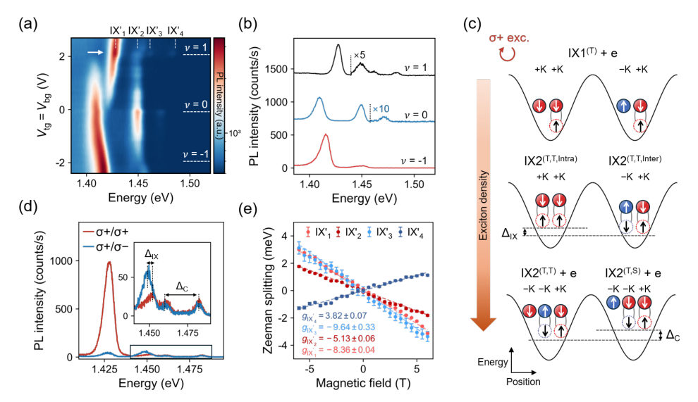
<figcaption class="paper-figure-caption"><b>Fig 4.</b> FIG. 4. (a) Filling-dependent PL spectra measured at 7 µW under linearly polarized 1.680 eV excitation, showing the evolution of the IX emission from hole to electron filling. Additional resonances IX′ 1–IX′ 4 emerge prominently near ν = 1. (b) Represen- tative linecuts at ν = −1, 0, and 1. The high-energy spectral region is multiplied for clarity. (c) Schematic potential-energy landscape of the IX population dynamics under σ+ excitation at ν = 1. (d) Helicity-resolved PL spectra at ν = 1 under σ+</figcaption>
</figure>
</div>

<p><strong>Summary.</strong> The authors used helicity-resolved magnetophotoluminescence on WSe2/WS2 moiré heterobilayers to map the internal structure of dipolar exciton ladders. They successfully assigned the ladder's components ($   ext{IX}1,   ext{IX}2,   ext{IX}3$) by analyzing their spin and valley polarization responses under magnetic fields. The results provide a fundamental understanding of how excitonic interactions are governed by both geometry (R-stacking) and external doping.</p>
<p><strong>Why it may be interesting.</strong> This work provides a highly detailed spectroscopic fingerprint of interacting excitons in 2D van der Waals heterostructures, directly mapping spin and valley degrees of freedom using magneto-optics—a key area for quantum simulation platforms.</p>
<details>
<summary>Detailed structure</summary>
<p><strong>Main problem.</strong> The study aims to resolve the internal spin-valley structure of dipolar exciton ladders formed by localized interlayer excitons in R-stacked WSe2/WS2 moiré heterobilayers.</p>
<p><strong>Main result.</strong> They established a detailed spin-valley picture, identifying the ladder components as $    ext{IX1}(   ext{T}) 
ightarrow   ext{IX2}(   ext{T}, ext{T}) 
ightarrow   ext{IX3}(   ext{T}, ext{S})$, and showed that resident carriers significantly modify this structure.</p>
<p><strong>Method.</strong> Helicity-resolved magneto-photoluminescence (PL) spectroscopy was used, combined with analysis of Zeeman splitting and circular polarization ($
ho$) as a function of magnetic field and carrier density.</p>
<p><strong>Model / system.</strong> The system is R-stacked WSe2/WS2 moiré heterobilayers hosting localized interlayer excitons (IXs). The physics involves dipolar interactions ($U_{dd}$) and spin-valley coupling, which are probed by measuring the energy and polarization of emitted photons.</p>
<p><strong>Key observables.</strong> PL peak energies ($    ext{IX}1,   ext{IX}2,   ext{IX}3$), Zeeman splitting ($\Delta E_Z(B)$), degree of circular polarization ($
ho$), and PL intensity scaling exponents with carrier density ($
u$).</p>
<p><strong>Important parameters / regimes.</strong> Charge neutrality ($
u=0$) and one-electron filling ($
u=1$); the on-site dipolar interaction ($38 	ext{ meV}$) and $  ext{WS}_2$ conduction-band spin splitting ($\Delta_C$) are key energy scales.</p>
<p><strong>Assumptions / limitations.</strong> The analysis relies on optical selection rules linking valley transitions to specific polarizations, and fitting Zeeman splittings to determine effective exciton g-factors.</p>
<p><strong>Figures summary.</strong> Figures illustrate PL spectra showing the emergence of discrete ladder peaks ($    ext{IX}2$ at $38 	ext{ meV}$ above $    ext{IX}1$), magnetic field dependence used for Zeeman splitting, and filling-dependent spectral evolution across different doping regimes.</p>
<p><strong>Paper structure.</strong> The paper systematically analyzes the exciton ladder structure first at charge neutrality ($
u=0$) using magneto-PL to assign spin/valley states. It then investigates the effect of electron doping ($
u=1$), observing changes in interaction strength, and finally examines hole doping ($
u=-1$) to map out the full phase diagram.</p>
</details>
<details>
<summary>Abstract</summary>
<p>Localized interlayer excitons in moiré heterobilayers can form dipolar exciton ladders, yet their internal spin-valley structure remains unresolved. Here, we use helicity-resolved magneto-photoluminescence to identify the microscopic origin of the ladder in R-stacked WSe$_2$/WS$_2$ at charge neutrality and one-electron filling of the moiré lattice. At charge neutrality, the first two emission peaks correspond to a spin-triplet interlayer exciton and a triplet-triplet two-exciton state separated by 38 meV, reflecting the on-site dipolar interaction. The opposite Zeeman response of the apparent third rung of the ladder rules out its assignment as a spin-conserving three-exciton state and instead identifies it as a triplet-singlet two-exciton configuration with a 22 meV offset set by the WS$_2$ conduction-band spin splitting. At one-electron filling, the correlated electronic background gives rise to charged one- and two-exciton states and intervalley/intravalley two-exciton configurations, while reducing the effective exciton-exciton interaction. Our results establish a spin-valley-resolved picture of dipolar exciton ladders beyond simple occupation-number physics in moiré heterobilayers.</p>
</details>
<p><sub><a href="#top">↑ back to top</a></sub></p>

<p><a id="paper-2607.06703"></a></p>
<h3 id="fluctuation-driven-enhancement-of-spin-orbit-torque-near-the-curie-temperature-of-ultrathin-ferromagnets"><a href="http://arxiv.org/abs/2607.06703v1">Fluctuation-Driven Enhancement of Spin-Orbit Torque near the Curie Temperature of Ultrathin Ferromagnets</a></h3>
<p><strong>Authors:</strong> Mateusz Szurek, Sergei Ivanov, Sergei Urazhdin<br>
<strong>Type:</strong> both · <strong>Category:</strong> statistical mechanics · <strong>PDF:</strong> <a href="https://arxiv.org/pdf/2607.06703v1">https://arxiv.org/pdf/2607.06703v1</a><br>
<strong>Analysis basis:</strong> full PDF text, analyzed in chunks
<strong>Topic relevance:</strong> <code>Keldysh / 2PI / non-Gaussian methods</code> <strong>3/5</strong> · <code>driven-dissipative phase transition</code> <strong>3/5</strong> · <code>non-equilibrium universality</code> <strong>3/5</strong> · <code>methods for driven-dissipative</code> <strong>2/5</strong> · <code>non-equilibrium dynamics</code> <strong>2/5</strong> · <code>spintronics-quantum-optics interface</code> <strong>2/5</strong> · <code>analog quantum simulation</code> <strong>1/5</strong> · <code>correlated / nonlocal dissipation</code> <strong>1/5</strong> · <code>exotic spin models in light-matter</code> <strong>1/5</strong></p>
<div class="figure-strip-hint">↔ Scroll figures horizontally</div>
<div class="paper-figures-scroll">
<figure class="paper-figure-card">
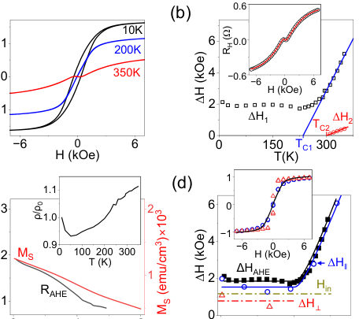
<figcaption class="paper-figure-caption"><b>Fig 1.</b> FIG. 2. Magnetic characterization of the CoFeB(0.65)/Pt(2.5) Hall bar. (a) Hall resistance vs out-of-plane field at the labeled temper- atures. (b) Broadening ∆H of RH(H) vs T extracted from two- sigmoid fits, with extrapolated critical temperatures TC1 and TC2 ob- tained from the Curie–Weiss law for the respective sigmoids. Inset: example two-sigmoid fit at T = 350 K. (c) Saturation magnetiza- tion Ms from SQUID magnetometry (red) and AHE amplitude RAHE (black) vs T/TC. Inset: normalized resistivity ρ/ρ0 vs T; the up- turn at low T is attributed to the Kondo effect. (d) Broadening ∆H of the AHE and M(H) curves obtained from the sigmoid fits for in- plane and out-of-plane fields. Inset:...</figcaption>
</figure>
<figure class="paper-figure-card">
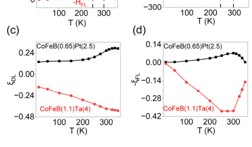
<figcaption class="paper-figure-caption"><b>Fig 2.</b> FIG. 4. Temperature dependence of the (a,b) damping-like and field-like effective fields and (c,d) SOT efficiencies for CoFeB(0.65)/ Pt(2.5) (black) and CoFeB(1.1)/Ta(4) (red), extracted with the GMS method at H = 1 kOe. Efficiencies ξDL,FL are computed from Eq. (12) using M(H,T) evaluated as described in Sec. IV. Dashed vertical lines mark TC1 and TC2.</figcaption>
</figure>
<figure class="paper-figure-card">
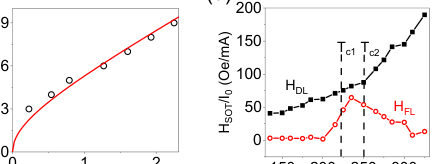
<figcaption class="paper-figure-caption"><b>Fig 3.</b> FIG. 5. ST-FMR characterization of a Ta(1.5)/CoFeB(0.65)/Pt(2.5) Hall bar. (a) Mixing voltage Vmix vs H at T = 275 K for rf driv- ing frequencies f = 3–6 GHz in steps of 1 GHz (symbols), fit to the sum of symmetric and antisymmetric Lorentzians (curves). (b) Gilbert damping α vs T obtained from linear fits of the linewidth ∆ vs f (inset). (c) Resonance field H0 vs f fit to the Kittel formula Eq. (16), yielding the effective anisotropy field Ha. (d) Effective SOFs HDL (closed symbols) and HFL (open symbols) vs T extracted as described in the text.</figcaption>
</figure>
</div>

<p><strong>Summary.</strong> This paper analyzes how magnetic thermal fluctuations near the Curie Temperature ($T_C$) drastically alter Spin-Orbit Torque in ultrathin ferromagnets. Using advanced susceptibility methods, the authors demonstrate that enhanced damping-like SOT arises from fluctuation mixing, offering a pathway for novel spintronic devices.</p>
<p><strong>Why it may be interesting.</strong> While focused on condensed matter magnetism, the core physics involves non-equilibrium statistical mechanics (fluctuations near a critical point) and how these fluctuations modify transport coefficients, which has parallels to open quantum systems dynamics.</p>
<details>
<summary>Detailed structure</summary>
<p><strong>Main problem.</strong> The study investigates how thermal magnetic fluctuations near the Curie Temperature ($T_C$) anomalously enhance the damping-like component of Spin-Orbit Torque (SOT) while suppressing the field-like component in ultrathin ferromagnets.</p>
<p><strong>Main result.</strong> Fluctuation-driven mixing between longitudinal and transverse interfacial spin conductances is responsible for this anomalous SOT behavior, suggesting a spintronic mechanism analogous to heat-assisted magnetic recording.</p>
<p><strong>Method.</strong> The authors employ Generalized Magnetoelectronic Susceptibilities (GMS) theory to analyze the system response, complementing experimental magnetotransport measurements like $V_{2\omega}(\phi)$.</p>
<p><strong>Model / system.</strong> The physical system is ultrathin-film magnetic heterostructures (e.g., CoFeB/Pt bilayers) whose Curie temperature is suppressed by confinement. The analysis models the effect of thermal fluctuations on spin transport coefficients.</p>
<p><strong>Key observables.</strong> Spin-Orbit Torques ($H_{FL}$ and $H_{DL}$), second-harmonic voltage ($V_{2\omega}(\phi)$), and generalized magnetic susceptibilities derived from Hall resistance measurements.</p>
<p><strong>Important parameters / regimes.</strong> Temperature relative to $T_C$ ($T/T_C$), film thickness, and applied magnetic fields ($H$).</p>
<p><strong>Assumptions / limitations.</strong> The GMS approach is used to bypass the need for magnetic saturation assumptions inherent in standard analyses near $T_C$. The analysis relies on averaging over fluctuating local magnetization orientations.</p>
<p><strong>Figures summary.</strong> Figures show magnetotransport measurements ($V_{2\omega}$ vs $\phi$) and comparisons between results obtained using GMS versus standard methods, illustrating the temperature dependence of SOT components.</p>
<p><strong>Paper structure.</strong> The paper progresses from establishing the limitations of standard analysis near $T_C$ to introducing the robust GMS framework. It then presents theoretical derivations based on fluctuation mixing mechanisms, culminating in experimental validation and discussion of device implications.</p>
</details>
<details>
<summary>Abstract</summary>
<p>We investigate how magnetic fluctuations influence spin-orbit torque in ultrathin-film magnetic heterostructures whose Curie temperature $T_C$ is suppressed by confinement. Above $T_C$, the damping-like contribution to spin-orbit field is significantly enhanced while the field-like contribution is suppressed, with the two contributions exhibiting opposite field dependencies. We show that these behaviors are consistent with fluctuation driven mixing between the longitudinal and transverse interfacial spin conductances, which enhances absorption of transversely polarized spin current by the ferromagnet. This mechanism can be activated below $T_C$ by engineering the microscopic magnetic state and by harnessing spin current-generated short-wavelength magnons, suggesting a spintronic analog of heat-assisted magnetic recording.</p>
</details>
<p><sub><a href="#top">↑ back to top</a></sub></p>

<p><a id="paper-2607.07703"></a></p>
<h3 id="non-hermitian-edge-state-endocytosis"><a href="http://arxiv.org/abs/2607.07703v1">Non-Hermitian Edge State Endocytosis</a></h3>
<p><strong>Authors:</strong> Si-Yu Yuan, Wen-Tan Xue, Ching Hua Lee<br>
<strong>Type:</strong> theory · <strong>Category:</strong> other · <strong>PDF:</strong> <a href="https://arxiv.org/pdf/2607.07703v1">https://arxiv.org/pdf/2607.07703v1</a><br>
<strong>Analysis basis:</strong> full PDF text, analyzed in chunks
<strong>Topic relevance:</strong> <code>driven-dissipative phase transition</code> <strong>3/5</strong> · <code>methods for driven-dissipative</code> <strong>3/5</strong> · <code>non-equilibrium dynamics</code> <strong>3/5</strong> · <code>Kondo &amp; dissipative impurity</code> <strong>2/5</strong> · <code>non-equilibrium universality</code> <strong>2/5</strong> · <code>Frenkel-Kontorova</code> <strong>1/5</strong> · <code>Keldysh / 2PI / non-Gaussian methods</code> <strong>1/5</strong> · <code>analog quantum simulation</code> <strong>1/5</strong> · <code>correlated / nonlocal dissipation</code> <strong>1/5</strong></p>
<div class="figure-strip-hint">↔ Scroll figures horizontally</div>
<div class="paper-figures-scroll">
<figure class="paper-figure-card">
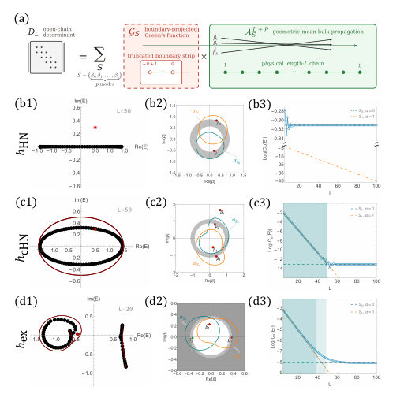
<figcaption class="paper-figure-caption"><b>Fig 1.</b> FIG. 2. Root-subset interpretation of Theorem I. (a) Each subset S selects roots, carries a bulk factor AL+P S , and has boundary prefactor GS. (b1)–(b3) Single Hatano–Nelson chain hHN(β) = β + t/β with t = 1/2. (c1)–(c3) Coupled Hatano– Nelson model hcHN(β) with t = 1/2 and ∆= 1/1000. (d1)– (d3) Main model hex in Eq. (7). Panels (b1)–(d1) show finite-L OBC spectra as black dots, and panels (c) and (d) use subset labels S0, S1. The five-pointed star in (b1)–(d1) identifies the energy for root panels (b2)–(d2) and competition panels (b3)–(d3). In (b3)–(d3), dashed curves show log |Cα| for the competing subset contributions, while blue open circles show the corresponding full finite-chain...</figcaption>
</figure>
<figure class="paper-figure-card">
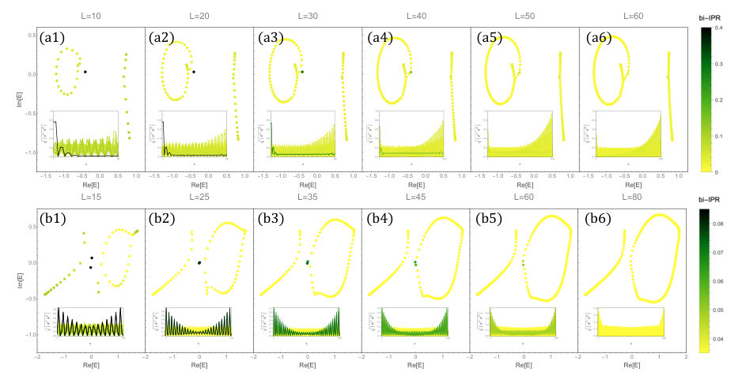
<figcaption class="paper-figure-caption"><b>Fig 2.</b> FIG. 3. The endocytosis process: OBC spectra at a sequence of system sizes L, colored by bi-IPR. Panel (a) uses model hex in</figcaption>
</figure>
<figure class="paper-figure-card">
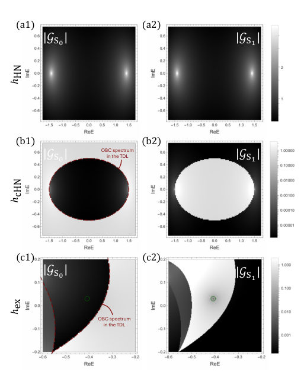
<figcaption class="paper-figure-caption"><b>Fig 3.</b> FIG. 4. Uncovering the anatomy of subset-resolved boundary- prefactors through Green’s functions. (a1)–(a2) |GS0(E)| and |GS1(E)| for the two one-root subsets of the single-chain Hatano–Nelson model hHN with t = 1/2, serving as basic ex- amples. (b1)–(b2) Corresponding diagnostic for representative two-root subsets of the coupled Hatano–Nelson model hcHN with t = 1/2 and ∆= 1/1000. (c1)–(c2) Main-text model hex in Eq. (7), where νi ≡νSi(Γ) and the green loop Γ in (c1) and (c2) gives the nontrivial relative winding ∆ν10 ≡ν1 −ν0 = 1. Dashed red curves in (b1) and (c1) denote the OBC bulk spectrum in the TDL. The zeros diagnose the TDL fate of edge states, as detailed in Table I.</figcaption>
</figure>
<figure class="paper-figure-card">
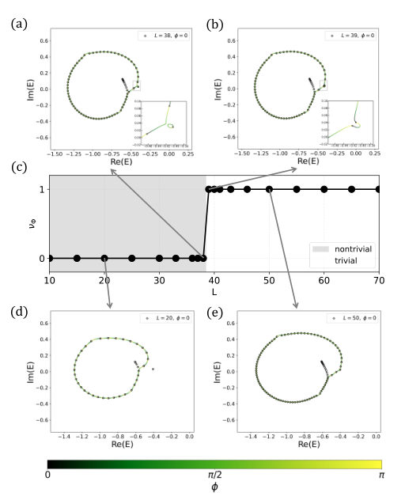
<figcaption class="paper-figure-caption"><b>Fig 4.</b> FIG. 5. Length-dependent flux response of endocytosis model hex in Eq. (7). (a)–(b) Critical cases at L = 38, 39, where the isolated eigenenergy is absorbed by the OBC bulk spectrum at those lengths. (c) The flux winding νΦ(L) defined in Eq. (12) is computed with the small regulator ξ = 0.006. (d) At L = 20 the edge state is fully isolated; (e) at L = 50 it is fully endocytosed. As the effective flux is e2iΦ per plaquette, 0 ≤Φ ≤π is one full pumping cycle.</figcaption>
</figure>
</div>

<p><strong>Summary.</strong> The paper introduces 'edge state endocytosis,' describing how isolated edge states in non-Hermitian chains disappear into the bulk spectrum as system size grows. This phenomenon is mathematically derived using a Widom expansion, showing that it arises from hidden zeros in subleading spectral contributions rather than standard TDL mechanisms.</p>
<p><strong>Why it may be interesting.</strong> This work provides a mathematically rigorous, platform-independent mechanism for understanding how finite-size effects can fundamentally alter topological edge state behavior in non-Hermitian systems, which is highly relevant to open quantum devices.</p>
<details>
<summary>Detailed structure</summary>
<p><strong>Main problem.</strong> The paper introduces 'edge state endocytosis,' a novel phenomenon where an isolated edge-localized eigenstate in a non-Hermitian system persists at finite sizes before being absorbed by the bulk continuum as the system size increases.</p>
<p><strong>Main result.</strong> This absorption mechanism is fundamentally traced to hidden zeros originating from subleading subsets of the Widom expansion, distinguishing it from standard Thermodynamic Limit (TDL) edge states.</p>
<p><strong>Method.</strong> The analysis employs a Widom-type determinant expansion applied to the energy dispersion equation for finite open chains, decomposing the problem into boundary-projected Green's function determinants and bulk propagation factors.</p>
<p><strong>Model / system.</strong> The study analyzes one-dimensional lattices under Open Boundary Conditions (OBCs) using non-Hermitian Hamiltonians, exemplified by models like the Hatano–Nelson chain. The framework is general for any isolated edge state subject to non-Hermitian couplings.</p>
<p><strong>Key observables.</strong> Edge localized eigenstates, Bound States in the Continuum (BIC), and the spectral determinant $D_L(E)$.</p>
<p><strong>Important parameters / regimes.</strong> System size ($L$), critical scale ($L_c$), and the relative suppression rates derived from subleading subset contributions.</p>
<p><strong>Assumptions / limitations.</strong> The mathematical framework relies on a Widom expansion of the characteristic determinant, assuming non-singular extreme hoppings for the decomposition to hold.</p>
<p><strong>Figures summary.</strong> Figure 1 schematically illustrates an edge mode being 'swallowed up' by the bulk spectrum as $L$ increases through a BIC. Figure 2 visualizes how different subsets contribute to the finite-L OBC spectra via root selection.</p>
<p><strong>Paper structure.</strong> The paper builds from establishing the mathematical tools (Widom expansion) to defining the spectral regimes (Bulk, TDL Edge State, Endocytosis), culminating in the derivation and prediction of the endocytosis scale based on subleading subset contributions.</p>
</details>
<details>
<summary>Abstract</summary>
<p>An isolated edge state observed in a finite open chain is usually expected to survive the thermodynamic limit (TDL), with a localization mechanism distinct from non-Hermitian skin accumulation, which localizes the \emph{entire} bulk continuum. We show that scale-sensitive non-Hermitian systems can generically admit a different fate: as we scale up the system size, a detached edge-localized eigenstate can remain sharply visible over a broad window until a critical scale is reached, where it forms an ephemeral bound state in the continuum (BIC) of the open-boundary bulk before being absorbed (entocytosed) at even larger system sizes. We call this phenomenon edge state endocytosis. Its mechanism is fundamentally traced to the Widom expansion of the open-chain characteristic determinant (energy dispersion equation) into contributions corresponding to admissible non-Bloch mode subsets. Each subset contribution factorizes into a boundary-projected Green's function (proj-GF) determinant, which encodes lattice truncation, and a subset-resolved bulk propagation factor, which encodes the system size dependence. We uncover the fundamental distinction: TDL edge states are zeros of the leading-subset proj-GF determinant, whereas endocytosed states are a hitherto-ignored class of hidden proj-GF zeros from subleading subsets that control the spectrum at finite sizes. Due to its fundamental mathematical origin, the endocytosis mechanism is completely platform-independent, occurring generically without fine-tuning when isolated edge states, topological or otherwise, are subject to non-Hermitian couplings that generate the requisite non-locality. Our new framework quantitatively predicts the endocytosis scale and sheds light on how its intricate competitive mechanism can be revealed through experimentally relevant Green's functions.</p>
</details>
<p><sub><a href="#top">↑ back to top</a></sub></p>

<p><a id="paper-2607.06997"></a></p>
<h3 id="thermodynamic-limits-on-reliable-signaling-by-biochemical-traveling-waves"><a href="http://arxiv.org/abs/2607.06997v1">Thermodynamic Limits on Reliable Signaling by Biochemical Traveling Waves</a></h3>
<p><strong>Authors:</strong> Shengyao Luo, Yuping Chen, Yuansheng Cao<br>
<strong>Type:</strong> both · <strong>Category:</strong> statistical mechanics · <strong>PDF:</strong> <a href="https://arxiv.org/pdf/2607.06997v1">https://arxiv.org/pdf/2607.06997v1</a><br>
<strong>Analysis basis:</strong> full PDF text, analyzed in chunks
<strong>Topic relevance:</strong> <code>driven-dissipative phase transition</code> <strong>3/5</strong> · <code>methods for driven-dissipative</code> <strong>3/5</strong> · <code>non-equilibrium universality</code> <strong>3/5</strong> · <code>correlated / nonlocal dissipation</code> <strong>2/5</strong> · <code>non-equilibrium dynamics</code> <strong>2/5</strong> · <code>Frenkel-Kontorova</code> <strong>1/5</strong> · <code>Keldysh / 2PI / non-Gaussian methods</code> <strong>1/5</strong> · <code>analog quantum simulation</code> <strong>1/5</strong></p>
<div class="figure-strip-hint">↔ Scroll figures horizontally</div>
<div class="paper-figures-scroll">
<figure class="paper-figure-card">
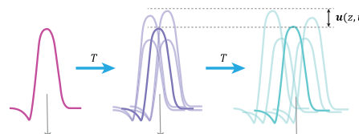
<figcaption class="paper-figure-caption"><b>Fig 1.</b> FIG. 1. Fluctuations of a traveling wave can be decomposed into a translational mode, described by the wave-position dis- placement X(t) in the comoving frame z = x −ct, and shape fluctuations u(z, t). The translational mode exhibits diffusive dynamics, Var(X) = 2DXt, whereas the shape fluctuations remain bounded.</figcaption>
</figure>
<figure class="paper-figure-card">
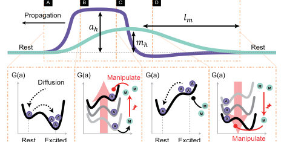
<figcaption class="paper-figure-caption"><b>Fig 2.</b> FIG. 2. Schematic of propagation and dissipation in an ex- citable trigger wave. Top: Activator (a, purple) and inhibitor (m, green) profiles during propagation, with amplitudes ah and mh. Bottom: One propagation cycle: diffusion-driven excitation of the activator, inhibitor response, inhibitor- mediated reshaping of the effective landscape G(a), and re- fractory relaxation. The slow inhibitor field remains elevated over the extended refractory tail behind the waveback (with characteristic length of lm) and dominates the propagation dissipation.</figcaption>
</figure>
<figure class="paper-figure-card">
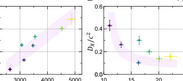
<figcaption class="paper-figure-caption"><b>Fig 3.</b> FIG. 4. Experimental test of wave-position diffusion and en- ergetics in mitotic trigger waves in Xenopus egg extracts. (A). Mitotic trigger waves arise from the coupled feedback network involving Cyclin B-Cdk1, Cdc25, Wee1/Myt1, and APC/C; the propagating wave is read out by the SiR-tubulin signal. (B). Wave positional variance σ2 X grows approximately lin- early with propagation time, allowing extraction of a wave- position diffusion constant DX. Data are grouped into differ- ent aging stages of the extract (color bar). (C). The protein- synthesis-rate proxy, obtained from the maximal wavefront rising slope, is positively correlated with the speed-amplitude product, consistent with the...</figcaption>
</figure>
<figure class="paper-figure-card">
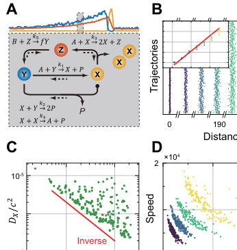
<figcaption class="paper-figure-caption"><b>Fig 4.</b> FIG. 3. Numerical validation in the reversible BZ reaction– diffusion model. (A). Reversible BZ model with microscopic reactions. The network is driven by chemostatted species (A and B). Representative spatial profiles of a propagating wave are shown in the top. (B). Peak positions from repeated realizations at different times (color bar); the positional vari- ance grows linearly with time, defining the diffusion constant DX (inset). (C). Normalized diffusion constant DX/c2 versus baseline-subtracted propagation dissipation rate ˙Wprop across sampled parameter sets, showing the inverse lower bound pre- dicted by Eq.(4). (D). Wave speed versus inhibitor peak am- plitude for different ˙Wprop,...</figcaption>
</figure>
</div>

<p><strong>Summary.</strong> This work establishes a fundamental thermodynamic constraint linking noise (wave diffusion) to energy cost (dissipation) for signal propagation via biochemical waves. By developing a stochastic framework and testing it on both simulated BZ systems and live Xenopus experiments, the authors show that reliable signaling requires a minimum energetic investment proportional to wave fluctuations.</p>
<p><strong>Why it may be interesting.</strong> While focused on biochemistry, the mathematical machinery—deriving bounds from non-equilibrium thermodynamics applied to pattern formation—is highly relevant to understanding energy dissipation in any driven, fluctuating physical system, including those studied in AMO physics.</p>
<details>
<summary>Detailed structure</summary>
<p><strong>Main problem.</strong> The central goal is determining the fundamental thermodynamic cost associated with maintaining reliable signal propagation via biochemical traveling waves.</p>
<p><strong>Main result.</strong> A rigorous thermodynamic bound links the wave's positional diffusion constant ($D_X$) to the dissipation rate ($\dot{W}_{	ext{prop}}$), suggesting that energy expenditure dictates noise resilience in biological signaling.</p>
<p><strong>Method.</strong> The authors developed a stochastic thermodynamic framework, projecting noisy field dynamics onto an adjoint translational mode to derive effective random walk statistics and calculate entropy production rates.</p>
<p><strong>Model / system.</strong> The study uses reaction-diffusion systems exhibiting excitable traveling waves, modeled by FitzHugh-Nagumo or Belousov-Zhabotinsky (BZ) kinetics. Validation is performed using both stochastic simulations of the BZ system and live imaging of mitotic trigger waves in Xenopus egg extracts.</p>
<p><strong>Key observables.</strong> Wave position diffusion constant ($D_X$), propagation dissipation rate ($\dot{W}_{	ext{prop}}$), wave speed ($c$), and inhibitor amplitude.</p>
<p><strong>Important parameters / regimes.</strong> The bound itself, $D_X \dot{W}_{	ext{prop}} / c^2 \geq 1$, and the timescale separation parameter $\varepsilon$ in quasi-static approximations.</p>
<p><strong>Assumptions / limitations.</strong> The analysis relies on weak noise regimes and assumes that the system can be accurately described by projecting dynamics onto a collective coordinate (the wave position).</p>
<p><strong>Figures summary.</strong> Figures conceptually decompose wave fluctuations into diffusive positional modes, show schematic relationships between propagation and dissipation in FHN models, and present quantitative comparisons of $D_X/c^2$ vs $\dot{W}_{	ext{prop}}$ for both simulated BZ waves and experimental Xenopus data.</p>
<p><strong>Paper structure.</strong> The paper establishes the general stochastic thermodynamic framework, derives the key bound by analyzing the adjoint translational mode, applies this to simplified models (like FHN), validates it using controlled simulations (BZ), and finally tests the predictions against complex biological systems (Xenopus).</p>
</details>
<details>
<summary>Abstract</summary>
<p>Biochemical traveling waves transmit signals across cells and tissues, but the thermodynamic cost of reliable propagation remains unclear. We develop a stochastic thermodynamic framework for reaction--diffusion systems with stable traveling waves and show that diffusion of the wave position is bounded by the dissipation specifically associated with propagation. The bound follows by projecting noisy field dynamics onto the adjoint translational mode, which maps the wave position to an effective biased random walk. Its tightness is controlled by the non-self-adjoint part of the linearized dynamics, with finite wave speed and antisymmetric reaction dynamics generically producing deviations from equality. For excitable trigger waves in a FitzHugh--Nagumo model, we show that the slow inhibitor dominates the propagation cost, yielding a trade-off among wave speed, inhibitor amplitude, and dissipation. We test these predictions in stochastic simulations of a microscopic Belousov--Zhabotinsky reaction--diffusion system and find consistent signatures in mitotic trigger-wave experiments in \textit{Xenopus} egg extracts. The same relation further imposes an annihilation-limited bound on the reliable signaling rate of wave trains.</p>
</details>
<p><sub><a href="#top">↑ back to top</a></sub></p>

<p><a id="paper-2607.07495"></a></p>
<h3 id="phenomena-in-the-kink-antikink-collisions-of-math1021math-theory"><a href="http://arxiv.org/abs/2607.07495v1">Phenomena in the kink-antikink Collisions of $φ^8$ Theory</a></h3>
<p><strong>Authors:</strong> Yun Feng, Yunguo Jiang<br>
<strong>Type:</strong> theory · <strong>Category:</strong> other · <strong>PDF:</strong> <a href="https://arxiv.org/pdf/2607.07495v1">https://arxiv.org/pdf/2607.07495v1</a><br>
<strong>Analysis basis:</strong> full PDF text, analyzed in chunks
<strong>Topic relevance:</strong> <code>non-equilibrium dynamics</code> <strong>3/5</strong> · <code>Keldysh / 2PI / non-Gaussian methods</code> <strong>2/5</strong> · <code>driven-dissipative phase transition</code> <strong>2/5</strong> · <code>non-equilibrium universality</code> <strong>2/5</strong> · <code>Frenkel-Kontorova</code> <strong>1/5</strong> · <code>analog quantum simulation</code> <strong>1/5</strong> · <code>correlated / nonlocal dissipation</code> <strong>1/5</strong> · <code>entanglement &amp; information structure</code> <strong>1/5</strong> · <code>methods for driven-dissipative</code> <strong>1/5</strong> · <code>scars &amp; prethermalization</code> <strong>1/5</strong></p>
<div class="figure-strip-hint">↔ Scroll figures horizontally</div>
<div class="paper-figures-scroll">
<figure class="paper-figure-card">

<figcaption class="paper-figure-caption"><b>Fig 1.</b> Figure 1: Different potentials in the ϕ8 theory</figcaption>
</figure>
<figure class="paper-figure-card">

<figcaption class="paper-figure-caption"><b>Fig 2.</b> Figure 2: Kinks and antikinks when n = 2 in the ϕ8 theory for p1 = 0.5 and p2 = 1.</figcaption>
</figure>
<figure class="paper-figure-card">

<figcaption class="paper-figure-caption"><b>Fig 3.</b> Figure 3: Kinks (no antikinks) when n = 3 in the ϕ8 theory</figcaption>
</figure>
<figure class="paper-figure-card">

<figcaption class="paper-figure-caption"><b>Fig 4.</b> Figure 4: 2D plot of the ϕK ¯ K at x = 0. From left to right panels, the initial velocities are v = 0.06, v = 0.0762 and v = 0.04, respectively.</figcaption>
</figure>
<figure class="paper-figure-card">

<figcaption class="paper-figure-caption"><b>Fig 5.</b> Figure 4 illustrates the evolutions of ϕK ¯ K at x = 0 for t ∈[0, 300]. It can be seen that the number of bounces are 2, 1 and 7 at the left, middle and right panels, respectively. The corresponding 3D plots are presented in Figure 5. For v = 0.04, the soliton pair</figcaption>
</figure>
</div>

<p><strong>Summary.</strong> This paper rigorously analyzes kink-antikink collisions in a complex phi^8 scalar field theory with multiple vacua. The authors report novel dynamical features, including complete annihilation regimes and intricate fractal resonance structures across different topological sectors. They propose that the classification of the effective potential serves as a universal predictive tool for understanding all collision outcomes.</p>
<p><strong>Why it may be interesting.</strong> While focused on classical field theory, the study's emphasis on energy exchange, resonance structures, and phase space topology provides rich analogies for understanding non-linear dynamics in quantum many-body systems or open quantum systems where effective potentials govern transitions.</p>
<details>
<summary>Detailed structure</summary>
<p><strong>Main problem.</strong> The study investigates the complex dynamics of kink-antikink collisions within a (1+1)-dimensional phi^8 scalar field theory possessing multiple degenerate vacua.</p>
<p><strong>Main result.</strong> The authors discovered a complete annihilation regime in specific topological sectors and mapped out fractal cartographies of multi-bounce resonance windows, suggesting that potential structure dictates collision outcomes.</p>
<p><strong>Method.</strong> The research combines analytical derivation of soliton solutions (using BPS equations) with extensive numerical simulations employing methods like Runge-Kutta and pseudospectral techniques.</p>
<p><strong>Model / system.</strong> The system is a phi^8 scalar field theory defined by the potential V(phi) = 1/2(phi^2 - p_1^2)^2(phi^2 - p_2^2)^2, featuring four degenerate vacua. The dynamics are governed by the corresponding Euler-Lagrange equation.</p>
<p><strong>Key observables.</strong> Collision outcomes (escape, bion formation, sector change, annihilation), fractal structure in velocity parameter space, and the effective potential U(x).</p>
<p><strong>Important parameters / regimes.</strong> The ratio n = p2/p1, initial collision velocities (v_in), and specific topological sectors defined by vacuum limits.</p>
<p><strong>Assumptions / limitations.</strong> The analysis is confined to the phi^8 model; comparisons are drawn with lower-order theories like phi^4 and phi^6.</p>
<p><strong>Figures summary.</strong> Figures illustrate potential profiles, 3D plots of kink-antikink configurations during collision at various velocities, and phase space diagrams revealing fractal resonance windows across different topological sectors.</p>
<p><strong>Paper structure.</strong> The paper progresses from establishing static soliton solutions for specific parameters (n=2, n=3) to modeling the time-dependent Lorentz-transformed collisions. It then systematically analyzes dynamics in multiple topological sectors, mapping out collision phenomena and developing a predictive framework based on potential changes.</p>
</details>
<details>
<summary>Abstract</summary>
<p>We investigated kink-antikink collisions in a $(1+1)$-dimensional $φ^8$ scalar field theory with multiple degenerate vacua. We presented explicit soliton solutions for different vacuum structures characterized by the ratio $n = p_2/p_1$. We focused on the cases $n=2$ and $n=3$ with four distinct vacua, and performed systematic numerical simulations across all topological sectors. We revealed that there is a complete annihilation regime in the $(1/2,\,1)$ sector, where kink-antikink pairs annihilate for all initial velocities. Up to our knowledge, such phenomenon is first reported in the kink antikink collisions. We revealed a comprehensive fractal cartography of multi-bounce resonance windows across sectors $(-1,\,-1/2)$, $(-1,\,-1/3)$, and $(-1/3,\,1/3)$. Given the kink antikink ($K\bar{K}$, or $\bar{K}K$) ordering, the effective potential and the spectrum of the Schrödinger like equation were presented. By collecting all the effective potential and collision phenomena, we proposed that the effective potential classification scheme provides a predictive framework for collision outcomes including escape, bion formation, sector change, and annihilation. Especially, it is identified that, when soliton pairs pass through each other, the abrupt changes of the potential type could explain both the sector-change and annihilation phenomena. Our work highlight novel dynamical features of the $φ^8$ model absent in lower-order field theories, and establish connections between topological structure, vibrational modes, and effective potentials.</p>
</details>
<p><sub><a href="#top">↑ back to top</a></sub></p>

<p><a id="paper-2607.06885"></a></p>
<h3 id="scanning-tunneling-microscopy-of-resonant-impurity-in-altermagnets-dual-fano-resonance-and-landau-quantization-induced-nodal-spin-contrast"><a href="http://arxiv.org/abs/2607.06885v1">Scanning tunneling microscopy of resonant-impurity in altermagnets: dual Fano resonance and Landau-quantization-induced nodal spin contrast</a></h3>
<p><strong>Authors:</strong> Yuan Hong, Zhigang Wang, Zhen-Guo Fu, Feng Chi, Cong Wang, Wei Zhang, Ping Zhang<br>
<strong>Type:</strong> theory · <strong>Category:</strong> other · <strong>PDF:</strong> <a href="https://arxiv.org/pdf/2607.06885v1">https://arxiv.org/pdf/2607.06885v1</a><br>
<strong>Analysis basis:</strong> full PDF text, analyzed in chunks
<strong>Topic relevance:</strong> <code>Keldysh / 2PI / non-Gaussian methods</code> <strong>3/5</strong> · <code>Kondo &amp; dissipative impurity</code> <strong>3/5</strong> · <code>methods for driven-dissipative</code> <strong>2/5</strong> · <code>spintronics-quantum-optics interface</code> <strong>2/5</strong> · <code>analog quantum simulation</code> <strong>1/5</strong> · <code>correlated / nonlocal dissipation</code> <strong>1/5</strong> · <code>driven-dissipative phase transition</code> <strong>1/5</strong> · <code>exotic spin models in light-matter</code> <strong>1/5</strong> · <code>non-equilibrium dynamics</code> <strong>1/5</strong></p>
<div class="figure-strip-hint">↔ Scroll figures horizontally</div>
<div class="paper-figures-scroll">
<figure class="paper-figure-card">

<figcaption class="paper-figure-caption"><b>Fig 1.</b> FIG. 1: (a) Schematic illustration of the STM/STS setup on an altermagnetic substrate in an out-of-plane magnetic field. The impurity is shown as a purple sphere, and the red and blue dots denote substrate atoms with opposite spin moments. The surrounding ellipses indicate anisotropic spin- dependent charge-density contours related by the ˆC4 ˆT sym- metry. (b) Dispersion of the d-wave altermagnetic substrate. Red and blue surfaces represent the two spin branches. (c) Spin-dependent anisotropy factor κσ(θ) for J = 0.4.</figcaption>
</figure>
<figure class="paper-figure-card">

<figcaption class="paper-figure-caption"><b>Fig 2.</b> FIG. 2: (a)–(c) Spin-up, spin-down, and total local spectral functions in the zero-field regime. The radial and angular coordinates denote kF d and the tip angle θ, respectively. (d) Corresponding spin polarization. The impurity-level detuning is set to ∆/Γ = 0.</figcaption>
</figure>
<figure class="paper-figure-card">

<figcaption class="paper-figure-caption"><b>Fig 3.</b> FIG. 3: (a), (b) Spin-up and spin-down local spectral functions as functions of the tip-impurity separation kF d. (c), (d) Corresponding Fano q factors. (e) Local spectral functions and spin polarization at kF d = 0.5. (f) Results with an optimized impurity Zeeman splitting εd/Γ = −2.07 that maximizes the spin polarization. For the local-spectral-function panels, the orientation is fixed at θ = 3π/4.</figcaption>
</figure>
<figure class="paper-figure-card">

<figcaption class="paper-figure-caption"><b>Fig 4.</b> FIG. 4: (a), (b) Spin-up and spin-down local spectral functions as functions of the direct tunneling parameter λ. (c), (d) Corresponding Fano q factors. (e) Local spectral functions and spin polarization at kF d = 4.28 and λ = 0.34, where the spin-up branch satisfies the interference-zero condition. (f) Corresponding results for the spin-down interference zero, with kF d = 6.53 and λ = 0.34. For panels (a)–(d), kF d = 0.5 and θ = 3π/4.</figcaption>
</figure>
<figure class="paper-figure-card">

<figcaption class="paper-figure-caption"><b>Fig 5.</b> FIG. 5: (a)–(c) Logarithm of the spin-up, spin-down, and averaged total local spectral functions, respectively, in the Landau-quantized regime. The logarithm is plotted because the local spectral function varies over a wide range. Radial and angular coordinates denote kF d and θ, respectively. (d) Corresponding spin polarization with Pmax ≈0.99. Param- eters are ∆/Γ = 0, η = 10−3EF , and ζ = 5, corresponding to the Fermi level lying midway between the fifth and sixth Landau levels.</figcaption>
</figure>
</div>

<p><strong>Summary.</strong> This theoretical work uses Green's function methods to model how resonant impurities scatter electrons on altermagnetic substrates using STM/STS. It predicts distinct spectral signatures, such as dual Fano resonances at zero field and pronounced spin-dependent nodal patterns under a magnetic field. This confirms the technique's capability to map out subtle band anisotropies in these exotic magnetic materials.</p>
<p><strong>Why it may be interesting.</strong> While focused on condensed matter magnetism, the use of quantum scattering theory (Green's functions) to probe subtle electronic structure anisotropies via local probes like STM is relevant to understanding open quantum systems dynamics in solid-state contexts.</p>
<details>
<summary>Detailed structure</summary>
<p><strong>Main problem.</strong> To establish Scanning Tunneling Microscopy/Spectroscopy (STM/STS) as a phase-sensitive local probe to characterize the band anisotropy in altermagnetic materials via resonant impurity scattering.</p>
<p><strong>Main result.</strong> The study predicts dual Fano resonance in zero field and reveals a large, measurable local spin contrast pattern in real space when subjected to a strong magnetic field with Landau quantization.</p>
<p><strong>Method.</strong> The analysis employs a Green's-function formalism applied to a resonant impurity coupled to a 2D d-wave altermagnetic substrate.</p>
<p><strong>Model / system.</strong> The system models an STM tip tunneling onto a resonant impurity embedded in a two-dimensional $d$-wave altermagnetic substrate. The physics is governed by the interplay between direct tunneling and substrate-mediated scattering effects.</p>
<p><strong>Key observables.</strong> Dual Fano resonance (zero field); Anisotropic spin-dependent oscillation of LDOS/Fano factor; Real-space nodal mismatch leading to local spin contrast (magnetic field).</p>
<p><strong>Important parameters / regimes.</strong> Altermagnetic splitting strength ($J$); Fermi energy ($E_F$); Magnetic field strength ($B$) leading to Landau quantization ($\hbar\omega_L$).</p>
<p><strong>Assumptions / limitations.</strong> The analysis uses a noninteracting resonant-level model and assumes the substrate Zeeman splitting is negligible compared to other energy scales.</p>
<p><strong>Figures summary.</strong> Figures illustrate schematics of the STM setup, the $d$-wave altermagnetic dispersion, spin-dependent anisotropy factors ($\kappa_\sigma$), and calculated spectral functions showing beating patterns in real space.</p>
<p><strong>Paper structure.</strong> The paper develops the theory by calculating the local spectral function using Green's functions, first analyzing the zero-field interference leading to Fano resonance, and then extending the formalism to include Landau quantization effects for magnetic field analysis.</p>
</details>
<details>
<summary>Abstract</summary>
<p>Using a Green's-function formalism, we study the spin-resolved local spectral function of a resonant impurity coupled to a two-dimensional $d$-wave altermagnetic substrate. It is found that the interplay between the direct impurity-STM tip tunneling and altermagnet-mediated tunneling leads to dual Fano resonance in the absence of external magnetic field. Moreover, the anisotropic spin-dependent oscillation of the local density of states and/or Fano factor provide the information of the altermagnetic splitting strength from the local/global perspective. In addition, spin-selective tunneling can be achieved by tuning the Fermi energy and the tip position. In the presence of strong magnetic field with Landau level quantization, the dominant STS signature becomes a spin-dependent nodal structure of the real-space pattern: the nodal mismatch between opposite spin channels produces a large local spin contrast. These results establish resonant-impurity STM/STS as a phase-sensitive local probe of altermagnetic band anisotropy.</p>
</details>
<p><sub><a href="#top">↑ back to top</a></sub></p>

<p><a id="paper-2607.06886"></a></p>
<h3 id="connecting-microseismicity-to-lithology-via-a-model-of-slip-avalanches"><a href="http://arxiv.org/abs/2607.06886v1">Connecting Microseismicity to Lithology via a Model of Slip Avalanches</a></h3>
<p><strong>Authors:</strong> Ethan A. Mullen, Yanbo Wang, Jordan J. Sickle, Frank W. DelRio, Pania Newell, Anastasia G. Ilgen, Karin A. Dahmen<br>
<strong>Type:</strong> both · <strong>Category:</strong> statistical mechanics · <strong>PDF:</strong> <a href="https://arxiv.org/pdf/2607.06886v1">https://arxiv.org/pdf/2607.06886v1</a><br>
<strong>Analysis basis:</strong> full PDF text, analyzed in chunks
<strong>Topic relevance:</strong> <code>non-equilibrium universality</code> <strong>3/5</strong> · <code>driven-dissipative phase transition</code> <strong>2/5</strong> · <code>entanglement &amp; information structure</code> <strong>2/5</strong> · <code>non-equilibrium dynamics</code> <strong>2/5</strong> · <code>Frenkel-Kontorova</code> <strong>1/5</strong> · <code>Keldysh / 2PI / non-Gaussian methods</code> <strong>1/5</strong> · <code>analog quantum simulation</code> <strong>1/5</strong> · <code>correlated / nonlocal dissipation</code> <strong>1/5</strong> · <code>methods for driven-dissipative</code> <strong>1/5</strong></p>
<div class="figure-strip-hint">↔ Scroll figures horizontally</div>
<div class="paper-figures-scroll">
<figure class="paper-figure-card">

<figcaption class="paper-figure-caption"><b>Fig 1.</b> Figure 1: Nanoindentation of Cane Creek Shale. a, Schematic of nanoindentation. A Berkovich tip is driven at constant loading rate perpendicular to the surface of a polished shale sample. b, Load vs. tip depth curves for all three shale samples. Highlighted are pop-in events greater than 2 nm. c, Tip depth vs. time curves for all three shale samples. Highlighted are the same pop-in events shown in panel (b). d-f, C(𝑆) for the shale samples ((d) anhydrite-rich, (e) clay-rich, and (f) quartz-rich) across all four temperatures. The mean-field prediction C(𝑆) ∼𝑆!(#!$) is shown as a reference slope on each panel. g-i, Box-and-whisker plots showing fitted exponents for the shale samples ((g)...</figcaption>
</figure>
<figure class="paper-figure-card">

<figcaption class="paper-figure-caption"><b>Fig 2.</b> Fig. 1d-f show that the distributions of pop-in sizes obtained during nanoindentation experiments are consistent with</figcaption>
</figure>
<figure class="paper-figure-card">

<figcaption class="paper-figure-caption"><b>Fig 3.</b> Figure 2: Microseismic event distributions. Scalar seismic moment CCDFs for all microseismic catalogs used in this article. a, CCDF of microseismic events extracted from operations targeting sedimentary formations. Reference slope shows the MFT prediction for the seismic moment CCDF exponent 𝜅∗ when stress- and length-scale effects are accounted for (see Discussion section for more details). b, CCDF of microseismic events extracted from operations targeting non- sedimentary formations. Reference slope shows the MFT prediction for the seismic moment CCDF exponent 𝜅. c, Box- and-whisker plot showing fitted exponents for distributions found in panel a. Red horizontal dashed line shows the...</figcaption>
</figure>
<figure class="paper-figure-card">

<figcaption class="paper-figure-caption"><b>Fig 4.</b> Figure 3: Local stress and length scale effects on microseismicity. a, Example hydraulic fracturing schematic. High- pressure fluid injection forces fractures to grow away from the wellbore, inducing slips in the surrounding rock. SEM images and extraction depths of the Cane Creek shale samples used in this study included. b, Two shear planes at different shear stresses 𝜏&#x27; &gt; 𝜏$ under an identical vertical force 𝑝. c, CCDF form of eq. (7) referenced in the main text evaluated at various reduced stresses 𝑓= (𝜏( −𝜏)/𝜏(. d, Scaling collapse of the curves in panel c. MFT predicts the universal scaling function 𝐻(𝑥).</figcaption>
</figure>
</div>

<p><strong>Summary.</strong> This research develops a micromechanical model of slip avalanches to predict earthquake statistics induced by fluid injection into underground rock formations. By comparing observed event size distributions from both lab nanoindentation tests on shale and real-world microseismic catalogs, the authors demonstrate that these statistics are universal but sensitive enough to reveal the underlying lithological structure of the rock.</p>
<p><strong>Why it may be interesting.</strong> While applied to geophysics, the core methodology relies heavily on analyzing power-law scaling in non-equilibrium systems (avalanches), which shares mathematical parallels with critical phenomena studied in statistical mechanics and disordered systems.</p>
<details>
<summary>Detailed structure</summary>
<p><strong>Main problem.</strong> Predicting the sizes and temporal occurrences of small earthquakes induced by fluid injection into the Earth's crust for safe industrial operations.</p>
<p><strong>Main result.</strong> The slip statistics (like the b-value) are universal, depending only on basic properties, and can distinguish between different lithologies (e.g., layered vs. non-layered sedimentary rocks).</p>
<p><strong>Method.</strong> Comparing observed power-law scaling exponents from microseismic catalogs and nanoindentation experiments against predictions from a mean-field model of slip avalanches.</p>
<p><strong>Model / system.</strong> The study uses a micromechanical model of slip avalanches in slowly deforming solids, applying concepts from statistical physics to analyze event size distributions across vastly different spatial scales (nanometers to meters).</p>
<p><strong>Key observables.</strong> Size distribution exponents ($\kappa$ or $\alpha$), the Gutenberg-Richter b-value, and cumulative distribution functions of seismic moments.</p>
<p><strong>Important parameters / regimes.</strong> Lithology type (layered vs. non-layered), temperature range ($25^\circ	ext{C}$ to $500^\circ	ext{C}$), and material composition (mineralogy).</p>
<p><strong>Assumptions / limitations.</strong> The slip statistics are governed by a mean-field theory, which simplifies complex interactions but successfully predicts scaling behavior across materials.</p>
<p><strong>Figures summary.</strong> Figures illustrate nanoindentation load/displacement traces on different shale types at various temperatures, and plots show the comparison of microseismic event distributions for sedimentary versus non-sedimentary formations.</p>
<p><strong>Paper structure.</strong> The paper establishes the problem (induced seismicity hazard), introduces the mean-field model for slip avalanches, applies this model to analyze both nanoindentation data on shale and large-scale microseismic catalogs from different geological settings, concluding that event statistics reveal underlying structural information about the rock.</p>
</details>
<details>
<summary>Abstract</summary>
<p>Fluid injection into the earth's crust can induce small and frequent earthquakes in the subsurface. Predicting their sizes and temporal occurrences via statistical analysis is crucial for safe operations in unconventional oil and gas recovery, enhanced geothermal systems, and geologic carbon storage. Here we show that a simple micromechanical model of slip avalanches in slowly deforming solids predicts the slip statistics observed over drastically different spatial scales, namely meter-scale microseismic observations and nanometer- to micrometer-scale nanoindentation experiments can be described with this model. Microseismic catalogs extracted from high-pressure fluid injection operations into geological basins with various lithologies and nanoindentation experiments on shale across a wide range of temperatures and mineral compositions yield statistics consistent with model predictions. This universality across materials, temperatures, and scales is consistent with the prediction that the slip statistics result from only a few basic properties. Previously debated deviations of the statistics in layered sedimentary formations are explained by finite-size and stress-integrative effects resulting from mechanically weak bedding planes. The slip statistics therefore provide important information about the structure and scales of the bedding planes. Conversely, the basin structure can also be used to predict the probability distribution for the sizes of triggered microseismic events.</p>
</details>
<p><sub><a href="#top">↑ back to top</a></sub></p>

<p><a id="paper-2607.07559"></a></p>
<h3 id="tunnel-rate-controlled-local-heat-distribution-in-mesoscopic-circuits"><a href="http://arxiv.org/abs/2607.07559v1">Tunnel-rate controlled local heat distribution in mesoscopic circuits</a></h3>
<p><strong>Authors:</strong> Parvathy Gireesan, Umang Soni, Harikrishnan Sundaresan, Giorgio Biasiol, Madhu Thalakulam<br>
<strong>Type:</strong> experiment · <strong>Category:</strong> statistical mechanics · <strong>PDF:</strong> <a href="https://arxiv.org/pdf/2607.07559v1">https://arxiv.org/pdf/2607.07559v1</a><br>
<strong>Analysis basis:</strong> full PDF text, analyzed in chunks
<strong>Topic relevance:</strong> <code>Kondo &amp; dissipative impurity</code> <strong>3/5</strong> · <code>non-equilibrium dynamics</code> <strong>3/5</strong> · <code>driven-dissipative phase transition</code> <strong>2/5</strong> · <code>Keldysh / 2PI / non-Gaussian methods</code> <strong>1/5</strong> · <code>analog quantum simulation</code> <strong>1/5</strong> · <code>correlated / nonlocal dissipation</code> <strong>1/5</strong> · <code>methods for driven-dissipative</code> <strong>1/5</strong> · <code>non-equilibrium universality</code> <strong>1/5</strong> · <code>quantum measurements</code> <strong>1/5</strong></p>
<div class="figure-strip-hint">↔ Scroll figures horizontally</div>
<div class="paper-figures-scroll">
<figure class="paper-figure-card">

<figcaption class="paper-figure-caption"><b>Fig 1.</b> FIG.1. Observation of thermoelectric current in the device: (a) SEM image of the gate structure, with</figcaption>
</figure>
<figure class="paper-figure-card">

<figcaption class="paper-figure-caption"><b>Fig 2.</b> Figure 2 for the charge transition shown in Figure 2(a). Figures 2(b, c) show the ISD-VSD curves for</figcaption>
</figure>
<figure class="paper-figure-card">

<figcaption class="paper-figure-caption"><b>Fig 3.</b> FIG. 2: Characterising the TE-current: (a) The CBO feature in between the two Coulomb diamonds is</figcaption>
</figure>
<figure class="paper-figure-card">

<figcaption class="paper-figure-caption"><b>Fig 4.</b> FIG. 3: Γeff controls the heat flow to drain-side: (a) ΔT as a function of Γeff, for three different VWN</figcaption>
</figure>
<figure class="paper-figure-card">

<figcaption class="paper-figure-caption"><b>Fig 5.</b> FIG. 4: Thermoelectric effect as seen in pulsed gate spectroscopy: Pulsed gate spectroscopy of charge</figcaption>
</figure>
</div>

<p><strong>Summary.</strong> The paper investigates using a gated quantum dot to actively control heat flow in nanoscale electronic circuits operating near absolute zero. By manipulating the tunnel coupling rates between the dot and its leads, researchers successfully demonstrated the ability to maintain large, controlled temperature differences across the device. This work establishes a pathway for building highly efficient quantum refrigerators based on solid-state mesoscopic components.</p>
<p><strong>Why it may be interesting.</strong> This work provides an experimental realization of non-equilibrium thermodynamics in a solid-state quantum system, directly addressing energy dissipation and thermal management—a key area for open quantum systems research.</p>
<details>
<summary>Detailed structure</summary>
<p><strong>Main problem.</strong> The core problem is controlling local heat distribution within mesoscopic circuits operating at milli-Kelvin temperatures, where conventional cooling methods are insufficient.</p>
<p><strong>Main result.</strong> By tuning the tunnel rates of a gated quantum dot, researchers demonstrated precise control over the polarity and magnitude of the thermoelectric current, enabling localized heat management.</p>
<p><strong>Method.</strong> The study combines electrical transport measurements (source-drain current) with advanced techniques like gate pulsing to directly measure electron temperature differences across the device.</p>
<p><strong>Model / system.</strong> The physical system is a gated quantum dot (QD) fabricated on a GaAs/AlGaAs two-dimensional electron gas (2DEG). The physics relies on analyzing thermally driven electrical transport through the QD's discrete energy spectrum.</p>
<p><strong>Key observables.</strong> Thermoelectric current ($I_{SD}$), temperature difference ($\Delta T$), and direct measurements of source ($T_S$) and drain ($T_D$) electron temperatures.</p>
<p><strong>Important parameters / regimes.</strong> Tunnel rates ($\Gamma_L, \Gamma_R$), gate voltage pulses ($\epsilon_P, \epsilon_{RP}$), and the achieved temperature difference ($\sim 650 	ext{ mK}$).</p>
<p><strong>Assumptions / limitations.</strong> The analysis assumes that controlling tunnel barriers allows for local heat control, which is crucial for developing efficient quantum refrigerators.</p>
<p><strong>Figures summary.</strong> Figures show SEM images of the gate structure, Coulomb blockade oscillations (CBO) maps, and line-profiles illustrating how $\Delta T$, $T_S$, and $T_D$ vary as a function of effective tunnel rate ($\Gamma_{	ext{eff}}$).</p>
<p><strong>Paper structure.</strong> The paper progresses from establishing the need for local heat control to detailing measurements using QD spectroscopy. It then analyzes how varying tunnel rates controls $\Delta T$, culminating in demonstrating that these tunable barriers enable advanced quantum refrigeration concepts.</p>
</details>
<details>
<summary>Abstract</summary>
<p>Solid-state quantum technologies, including qubits and quantum metrology circuits, demand milli-Kelvin operation to preserve fragile quantum states from classical noise. While the negligible electron-phonon coupling is the major impediment, reaching 50 mK electron temperature is further suffered by the high electrical resistance and sub-micron-scale dimensions of typical devices, limiting conventional heat dissipation. Though the phonons are effectively frozen, thermoelectric techniques could offer a viable path for heat management.This work explores thermally driven electrical transport in a gated quantum dot (QD) on a GaAs-AlGaAs two-dimensional electron gas (2DEG), to control heat flow between the source and drain reservoirs.By exploiting the QD's discrete energy spectrum and tuneable tunnel rates, a precise control over the polarity and magnitude of the resulting thermoelectric current is demonstrated. A temperature difference of 650 mK is maintained across the QD, a separation of 400 nm, by tuning the tunnel-rates. An experimental gate pulsing method is also introduced to directly measure the electron temperature differences across the QD, bypassing the need for any theoretical fits. The results presented here show that tuneable tunnel barriers can be used for local heat control, and could lead to advanced quantum refrigerators that work efficiently in mesoscopic circuits.</p>
</details>
<p><sub><a href="#top">↑ back to top</a></sub></p>

<p><a id="paper-2607.07048"></a></p>
<h3 id="dzyaloshinskii-moriya-gradients-unlock-topological-dimensional-reduction-in-magnetic-hopfions"><a href="http://arxiv.org/abs/2607.07048v1">Dzyaloshinskii-Moriya Gradients Unlock Topological Dimensional Reduction in Magnetic Hopfions</a></h3>
<p><strong>Authors:</strong> Kui Yuan, Hailong Shen, Jiawei Dong, Xin Zhang, Longqing Chen, Yihan Wang, Bo Liu, Qing Zhang, Zhengshang Wang, Wenbin Qiu, Xiaoyi Wang, Bing Han, Yang Qiu, Kun Zhang, Xudong Cui<br>
<strong>Type:</strong> both · <strong>Category:</strong> other · <strong>PDF:</strong> <a href="https://arxiv.org/pdf/2607.07048v1">https://arxiv.org/pdf/2607.07048v1</a><br>
<strong>Analysis basis:</strong> full PDF text, analyzed in chunks
<strong>Topic relevance:</strong> <code>spintronics-quantum-optics interface</code> <strong>3/5</strong> · <code>driven-dissipative phase transition</code> <strong>2/5</strong> · <code>Frenkel-Kontorova</code> <strong>1/5</strong> · <code>analog quantum simulation</code> <strong>1/5</strong> · <code>correlated / nonlocal dissipation</code> <strong>1/5</strong> · <code>exotic spin models in light-matter</code> <strong>1/5</strong> · <code>methods for driven-dissipative</code> <strong>1/5</strong> · <code>non-equilibrium dynamics</code> <strong>1/5</strong> · <code>non-equilibrium universality</code> <strong>1/5</strong></p>
<div class="figure-strip-hint">↔ Scroll figures horizontally</div>
<div class="paper-figures-scroll">
<figure class="paper-figure-card">

<figcaption class="paper-figure-caption"><b>Fig 1.</b> FIG. 1. Overview and proposed mechanism for DMI-gradient-assisted hopfion-ring breakdown. (a) Fresnel-mode LTEM overview of TiO₂ nanoparticles embedded in a FeCrNiMn high-entropy-alloy matrix, showing the three investigated regions: pristine TiO₂ (region 1), uniformly Y-doped TiO₂ (region 2), and nonuniformly Y-doped TiO₂</figcaption>
</figure>
<figure class="paper-figure-card">

<figcaption class="paper-figure-caption"><b>Fig 2.</b> FIG. 2. Electronic structure and simulation-assisted assignment of closed toroidal textures in pristine and uniformly Y-doped TiO₂. (a,b) LTEM images of pristine and uniformly Y-doped TiO₂ regions. (c,d) Ti L₂,₃-edge spectra (left) and O K-edge spectra (right), with corresponding fits, acquired from the pristine and uniformly Y-doped regions. (e,f) Tilt-dependent LTEM images and reconstructed magnetic-domain maps of pristine TiO₂. (g,h) Tilt-dependent LTEM images and reconstructed magnetic-domain maps of uniformly Y-doped TiO₂. (i,j) Effective MuMax3-simulated closed-ring states with QH close to 1 in pristine and uniformly Y-doped TiO₂, respectively.</figcaption>
</figure>
<figure class="paper-figure-card">

<figcaption class="paper-figure-caption"><b>Fig 3.</b> FIG. 3. Electronic and magnetic structure of a nonuniformly Y-doped TiO₂ nanoparticle. (a) HRTEM image showing the upper domain (region 1), interfacial boundary (region 2), and lower domain (region 3). (b)-(d) Ti L₂,₃-edge spectra (left) and O K-edge spectra (right), with fits, acquired from the upper domain, boundary, and lower domain. (e,f) Tilt- dependent LTEM images and reconstructed magnetic-domain maps of the same nanoparticle. (g) MuMax3-simulated post-breakdown state, showing a low-DMI skyrmion-string-like remnant and a high-DMI helicity-rich topologically trivial branch.</figcaption>
</figure>
<figure class="paper-figure-card">

<figcaption class="paper-figure-caption"><b>Fig 4.</b> FIG. 4. Field response of closed and post-breakdown magnetic textures during a representative hysteresis-like field sweep at zero tilt. (a)-(c) LTEM images, reconstructed magnetic-domain maps, and MuMax3 simulations of the pristine TiO₂ region under varying fields. (d)-(f) Corresponding images, reconstructions, and simulations of the uniformly Y-doped region. (g)-(i) Corresponding images, reconstructions, and simulations of the nonuniformly Y-</figcaption>
</figure>
</div>

<p><strong>Summary.</strong> This work demonstrates that chemical disorder (Y doping) can be used as a tool to manipulate the topology of magnetic structures in $  ext{TiO}_2$ nanoparticles. By creating sharp gradients, the system forces a transition from stable 3D Hopfions into lower-dimensional skyrmion strings. This provides a mechanism for controlling topological states using material engineering.</p>
<p><strong>Why it may be interesting.</strong> While focused on condensed matter magnetism, the concept of controlled defect engineering to induce a specific symmetry breaking or dimensionality reduction in a topologically protected state shares conceptual parallels with engineered quantum interfaces or boundary effects studied in AMO physics.</p>
<details>
<summary>Detailed structure</summary>
<p><strong>Main problem.</strong> The study investigates how controlled chemical inhomogeneity can break the topological protection of three-dimensional magnetic solitons (Hopfions), causing them to reduce dimensionality into effectively two-dimensional skyrmion strings.</p>
<p><strong>Main result.</strong> Nonuniform Y doping creates a sharp gradient in the effective Dzyaloshinskii–Moriya interaction parameter ($q$), leading to the asymmetric splitting of the toroidal texture into stable skyrmion string remnants and topologically trivial branches.</p>
<p><strong>Method.</strong> The research combines experimental characterization using Tilt-dependent Lorentz TEM and EELS with theoretical modeling via micromagnetic simulations.</p>
<p><strong>Model / system.</strong> The system involves disordered TiO2 nanoparticles embedded in an FeCrNiMn host, where magnetism arises from localized Ti3+/oxygen-vacancy centers. The model analyzes the competition between interfacial mismatch energy (due to gradients) and elastic curvature energy.</p>
<p><strong>Key observables.</strong> Topological invariants like Hopf invariant ($  ext{QH}$) and Skyrmion charge ($Q$); magnetic domain maps; electronic states ($    ext{Ti}^{3+}$ vs $  ext{Ti}^{4+}$).</p>
<p><strong>Important parameters / regimes.</strong> The ratio $q=D/(2A)$; the degree of Y doping (uniform vs. nonuniform); local spin continuity.</p>
<p><strong>Assumptions / limitations.</strong> Effective micromagnetic parameters are used for defect-induced textures; simulations introduce confinement barriers to suppress artificial topological leakage.</p>
<p><strong>Figures summary.</strong> Figures compare LTEM images and spectra across pristine, uniformly doped, and nonuniformly doped samples, illustrating the transition from stable rings to bifurcated skyrmion strings under varying magnetic fields.</p>
<p><strong>Paper structure.</strong> The paper progresses by first establishing the baseline (pristine/uniform doping) showing robust 3D textures, then introducing the gradient via nonuniform doping, which is shown experimentally and simulated to cause the topological splitting mechanism.</p>
</details>
<details>
<summary>Abstract</summary>
<p>Three-dimensional magnetic solitons retain topological protection only while their spin field remains continuous. Here we show that chemical inhomogeneity can break this protection in a controlled way, converting a hopfion-like toroidal texture into an effectively two-dimensional skyrmion string. Tilt-dependent Lorentz transmission electron microscopy, electron energy-loss spectroscopy, and micromagnetic simulations of pristine, uniformly Y-doped, and nonuniformly Y-doped disordered TiO2 nanoparticles embedded in a FeCrNiMn host reveal two regimes. Uniform Y doping enriches Ti3+/oxygen-vacancy localization centers and stabilizes closed rings with Hopf invariant QH approximately 1. Nonuniform Y doping forms a Ti4+-rich, vacancy-depleted boundary that creates a sharp q=D/(2A) gradient and a weak-moment leakage channel. This coupled mismatch torque and continuity leakage split the ring, leaving a skyrmion-string remnant and a field-sensitive helicity texture.</p>
</details>
<p><sub><a href="#top">↑ back to top</a></sub></p>

<p><a id="paper-2607.07499"></a></p>
<h3 id="nonlinear-dynamics-of-hopfion-for-frequency-multiplication"><a href="http://arxiv.org/abs/2607.07499v1">Nonlinear Dynamics of Hopfion for Frequency Multiplication</a></h3>
<p><strong>Authors:</strong> Waleed I. Waseer, Yunshan Cao, Peng Yan<br>
<strong>Type:</strong> theory · <strong>Category:</strong> other · <strong>PDF:</strong> <a href="https://arxiv.org/pdf/2607.07499v1">https://arxiv.org/pdf/2607.07499v1</a><br>
<strong>Analysis basis:</strong> full PDF text, analyzed in chunks
<strong>Topic relevance:</strong> <code>spintronics-quantum-optics interface</code> <strong>3/5</strong> · <code>non-equilibrium dynamics</code> <strong>2/5</strong> · <code>analog quantum simulation</code> <strong>1/5</strong> · <code>driven-dissipative phase transition</code> <strong>1/5</strong> · <code>exotic spin models in light-matter</code> <strong>1/5</strong> · <code>methods for driven-dissipative</code> <strong>1/5</strong> · <code>non-equilibrium universality</code> <strong>1/5</strong></p>
<div class="figure-strip-hint">↔ Scroll figures horizontally</div>
<div class="paper-figures-scroll">
<figure class="paper-figure-card">

<figcaption class="paper-figure-caption"><b>Fig 1.</b> FIG. 1. (a) Schematic of a Hopfion stabilized in a chiral ferromagnetic disk sandwiched between two PMA layers. (b) mz component of a numerically computed Hopfion for D = 395 µJ/m2 in a cylinder of height h and diameter of 200.2 nm. (c) Cross section of Hopfion at y = 0. (d) The two isosurface at m = (±1, 0, 0) are linked once, as required by the unit Hopf charge. (e) Plot of mz with two isosurface drawn m = (±1, 0, 0) representing the Hopf charge.</figcaption>
</figure>
<figure class="paper-figure-card">

<figcaption class="paper-figure-caption"><b>Fig 2.</b> FIG. 2. Spin-wave resonance spectrum in response to an in-plane excitation. Inset (a1) shows a magnified view of the magnon spectrum, highlighting the labeled localized state M5. The inset (a2) illustrates the behavior of localized states in response to DMI. Modes M6-M12 corresponds to 21.8,22.4 ,23,23.45,23.7,23.9 and 24.275 GHz respectively. The inset (a3) illustrates the effect of varying DMI on the Hopfion profile along with the contour drawn at m = (0, 0, −1).</figcaption>
</figure>
<figure class="paper-figure-card">

<figcaption class="paper-figure-caption"><b>Fig 3.</b> FIG. 3. An illustrative example of frequency multiplication by Hopfion configuration. Under the out-of-plane excitation with field of frequency f1 = 7 GHz and f2 = 9 GHz and ampli- tude 2 mT. Close-by small features near 7 GHz are nonlinear sidebands (finite-amplitude modulation / mode coupling) and they disappear in the small-drive limit</figcaption>
</figure>
<figure class="paper-figure-card">

<figcaption class="paper-figure-caption"><b>Fig 4.</b> FIG. 4. (a) Field-frequency map of the magnetization response under an in–plane microwave excitation Bext(t) = H0 sin(2πfappt) ˆx. Here applied frequecny is fapp = 16 GHz. The color scale shows the normalized FFT amplitude of the magnetization as a function of the frequency f and the microwave field amplitude H0. (b) DMI–frequency phase diagram of the magnetization response under a microwave excitation with frequency fapp = 7 GHz. The color scale shows the normalized FFT amplitude of the spatially averaged mx component as a function of frequency and DMI strength. Clear vertical features appear at the fundamental frequency fapp and its higher harmonics indicate nonlinear frequency...</figcaption>
</figure>
<figure class="paper-figure-card">

<figcaption class="paper-figure-caption"><b>Fig 5.</b> FIG. 5. Illustrative examples of eigenmode excitation by mi- crowave with fractional frequency. (a) In-plane excitation of eigenmode by applied frequencies that are fraction of localized mode f = 1.6 GHz. (b) Out-of-plane excitation of eigenmode by applied frequencies that are fraction of localized mode at f = 6.15 GHz. In both examples we have normalized the recorded amplitude of FFT at the corresponding eigenfre- quencies by dividing the amplitude of applied frequency, i.e., FFT amplitude at 1.6 GHz, by the FFT amplitude at applied frequency.</figcaption>
</figure>
</div>

<p><strong>Summary.</strong> This paper simulates the nonlinear behavior of magnetic Hopfion spin textures when subjected to microwave driving fields. The authors demonstrate that these topological solitons can efficiently generate higher harmonics of the input frequency, a process termed frequency multiplication. This work highlights the potential of engineered magnetic structures for advanced nonlinear magnonic applications.</p>
<p><strong>Why it may be interesting.</strong> While focused on classical magnetism, the study involves complex topological structures (Hopfions) exhibiting highly non-linear wave dynamics and resonance phenomena, which shares mathematical parallels with nonlinear wave propagation studied in quantum optics or AMO systems.</p>
<details>
<summary>Detailed structure</summary>
<p><strong>Main problem.</strong> The study investigates the nonlinear response of magnetic Hopfion spin textures when driven by external microwave fields, aiming to demonstrate efficient frequency multiplication.</p>
<p><strong>Main result.</strong> Hopfions exhibit strong harmonic generation, and tuning the driving frequency to fractional resonances significantly enhances this effect, showing promise for nonlinear magnonics.</p>
<p><strong>Method.</strong> The research employs systematic micromagnetic simulations solving the Landau-Lifshitz-Gilbert (LLG) equation using MuMax3.</p>
<p><strong>Model / system.</strong> The physical system is a magnetic Hopfion—a 3D topological soliton structure in a chiral ferromagnetic nanodisk. The dynamics are governed by an energy density functional and simulated via the LLG equation.</p>
<p><strong>Key observables.</strong> Power spectra showing second- and third-harmonic generation, localized magnon modes (breathing/gyration), and harmonic amplitudes ($2f, 3f$, etc.).</p>
<p><strong>Important parameters / regimes.</strong> Material parameters like saturation magnetization ($M_s$), exchange stiffness ($A$), and the driving frequency relative to fractional resonance points ($f_{drive} = f_{mode}/n$).</p>
<p><strong>Assumptions / limitations.</strong> The analysis assumes specific material constants and models the system's dynamics using classical micromagnetics, contrasting isolated vs. bulk topological states.</p>
<p><strong>Figures summary.</strong> Figures illustrate Hopfion schematics, spin-wave resonance spectra showing localized modes (M5-M12), and examples of frequency multiplication achieved via in-plane or out-of-plane excitation.</p>
<p><strong>Paper structure.</strong> The paper progresses from establishing the physical model and basic harmonic generation to analyzing directional coupling ($\hat{x}$ vs. $\hat{z}$), then explores robustness against temperature and disorder, concluding with a comparison of nonlinear response between isolated and bulk Hopfion assemblies.</p>
</details>
<details>
<summary>Abstract</summary>
<p>Hopfions, associated with higher-dimensional topology through the Hopf fibration, exhibit {exotic} features like {complex knot} and improved stability compared to skyrmions, enhancing their appeal for innovative applications. In this paper, we study the nonlinear response of magnetic Hopfion to microwave fields. {We observe the emergence of higher-order harmonics of the driving microwave field as it interacts with the Hopfion}. By carefully selecting the {driving frequency, the corresponding harmonic can efficiently excite localized magnon state of a Hopfion. Our results demonstrate the promising potential of hopfions in nonlinear magnonics.</p>
</details>
<p><sub><a href="#top">↑ back to top</a></sub></p>

<p><a id="paper-2607.07644"></a></p>
<h3 id="thermal-response-functions-and-the-peierls-boltzmann-equation-for-second-sound-and-phonon-hydrodynamics-in-graphene"><a href="http://arxiv.org/abs/2607.07644v1">Thermal-response Functions and the Peierls-Boltzmann Equation for Second Sound and Phonon Hydrodynamics in Graphene</a></h3>
<p><strong>Authors:</strong> Antonio Martinez-Margolles, Patrick K. Schelling<br>
<strong>Type:</strong> theory · <strong>Category:</strong> statistical mechanics · <strong>PDF:</strong> <a href="https://arxiv.org/pdf/2607.07644v1">https://arxiv.org/pdf/2607.07644v1</a><br>
<strong>Analysis basis:</strong> full PDF text, analyzed in chunks
<strong>Topic relevance:</strong> <code>non-equilibrium dynamics</code> <strong>3/5</strong> · <code>non-equilibrium universality</code> <strong>2/5</strong> · <code>Keldysh / 2PI / non-Gaussian methods</code> <strong>1/5</strong> · <code>correlated / nonlocal dissipation</code> <strong>1/5</strong> · <code>driven-dissipative phase transition</code> <strong>1/5</strong> · <code>interference shaping light</code> <strong>1/5</strong> · <code>methods for driven-dissipative</code> <strong>1/5</strong></p>
<div class="figure-strip-hint">↔ Scroll figures horizontally</div>
<div class="paper-figures-scroll">
<figure class="paper-figure-card">

<figcaption class="paper-figure-caption"><b>Fig 1.</b> Figure 1: Real part 퐾′ 풒(휔) of the response function as a function of frequency 휔 2휋at 푇= 300퐾. Calculation for excitation vector 풒, with 퐿= 2휋</figcaption>
</figure>
<figure class="paper-figure-card">

<figcaption class="paper-figure-caption"><b>Fig 2.</b> Figure 2: Imaginary part 퐾′′ 풒(휔) of the response function as a function of frequency 휔</figcaption>
</figure>
<figure class="paper-figure-card">

<figcaption class="paper-figure-caption"><b>Fig 3.</b> Figure 3: Imaginary component 퐾′′ 풒(휔) determined at 푇= 50K. In contrast to the 푇= 300K results, sharp peaks are evident in the spectra, potentially consistent with “ballistic” transport. Calculation for excitation vector 풒, with 퐿= 2휋</figcaption>
</figure>
<figure class="paper-figure-card">

<figcaption class="paper-figure-caption"><b>Fig 4.</b> Figure 4: Contributions of the acoustic modes to 퐾′′ 풒(휔) determined at 푇= 300K for excitation vector 풒, with 퐿= 2휋</figcaption>
</figure>
<figure class="paper-figure-card">

<figcaption class="paper-figure-caption"><b>Fig 5.</b> Figure 5: Contributions of the acoustic modes to 퐾′′ 풒(휔) determined at 푇= 50K. Calculation done for excitation vector 풒, where 퐿= 2휋</figcaption>
</figure>
</div>

<p><strong>Summary.</strong> This paper develops a comprehensive theory connecting phonon hydrodynamics and second sound phenomena in Graphene using the Peierls-Boltzmann Equation. It calculates thermal response functions derived from microscopic physics, demonstrating how interference effects manifest as 'second phonons.' The work is crucial for understanding when simple theoretical models fail due to scattering or short length scales.</p>
<p><strong>Why it may be interesting.</strong> This work provides advanced theoretical tools for non-equilibrium thermal transport in low-dimensional materials like graphene, which is highly relevant to understanding energy dissipation and heat management in nanoscale devices.</p>
<details>
<summary>Detailed structure</summary>
<p><strong>Main problem.</strong> The paper aims to connect phonon phase-space distribution functions to the microscopic physics of heat wave evolution, specifically addressing interference effects in transient thermal grating experiments for second sound.</p>
<p><strong>Main result.</strong> The theory successfully relates PBE solutions to 'second phonons' as elementary excitations and provides a framework to understand when these approximations break down due to short length scales or strong scattering.</p>
<p><strong>Method.</strong> It develops thermal response functions by solving the Peierls-Boltzmann equation (PBE) in the relaxation-time approximation (RTA), using DFT data for input parameters.</p>
<p><strong>Model / system.</strong> The study focuses on phonon hydrodynamics and second sound propagation in Graphene. The theoretical framework involves analyzing the evolution of phonon distribution functions ($  ilde{n}_{\mathbf{q}
u}$) governed by the PBE.</p>
<p><strong>Key observables.</strong> Phonon distribution function ($    ilde{n}<em _mathbf_q="\mathbf{q">{\mathbf{q}
u}$), thermal response function $   ilde{\chi}</em>(\omega)$, and the ratio $R_{\mathbf{q},\omega}$ which indicates scattering strength relative to coherent oscillation.}</p>
<p><strong>Important parameters / regimes.</strong> Temperature ($T=300$ K vs $T=50$ K), excitation wave vector ($\mathbf{q}$), system length scale ($\ell$), and phonon branch (ZA, TA, LA).</p>
<p><strong>Assumptions / limitations.</strong> The analysis starts with the PBE in the RTA; later sections extend this by assuming a harmonic Hamiltonian approximation.</p>
<p><strong>Figures summary.</strong> Figures show the real and imaginary parts of the response function $\chi_{\mathbf{q}}(\omega)$ at different temperatures, illustrating spectral features related to second sound poles. A key diagnostic is the ratio $R_{\mathbf{q},\omega}$, which determines if scattering invalidates the elementary excitation concept.</p>
<p><strong>Paper structure.</strong> The paper progresses from establishing the connection between PBE and heat wave evolution (Chunk 1), deriving explicit thermal response functions using DFT data to predict second sound poles (Chunk 2), analyzing the validity of the 'second phonon' concept via a scattering ratio $R$ across different length scales (Chunk 3), and finally, extending the formalism beyond RTA within the harmonic approximation (Chunk 4).</p>
</details>
<details>
<summary>Abstract</summary>
<p>We connect expressions for phonon phase-space distribution functions to microscopic physics of the evolution of heat waves. The role of interference effects that arise as a result of a periodic heating source typically encountered in transient thermal grating (TTG) experiments is then explored. The distribution functions are evaluated as solutions to the Peierls-Boltzmann equation (PBE) in the relaxation-time approximation (RTA). Starting from the PBE, we next develop thermal response functions. The response functions are computed using data from density-functional theory (DFT) calculations. Using this approach, it is shown how solutions to the PBE can be related to the propagation of second phonons as elementary excitations, and within this perspective the necessary conditions for the propagation and observation of second sound is elucidated. The approach developed therefore shows how PBE theory for phonon hydrodynamics and second sound can be modified to properly describe interference and phonon decoherence effects that are likely important at shorter length scales. Finally, we then discuss how many-body theory can be extended to include coupled scattering channels and hence provide a quantitative theory beyond the RTA.</p>
</details>
<p><sub><a href="#top">↑ back to top</a></sub></p>
<hr>
<p>
<a href="index.html">← Index</a>
 · <a href="papers_05.html">← Previous</a> · <a href="papers_07.html">Next →</a>
</p>
<hr>

</body>
</html>
